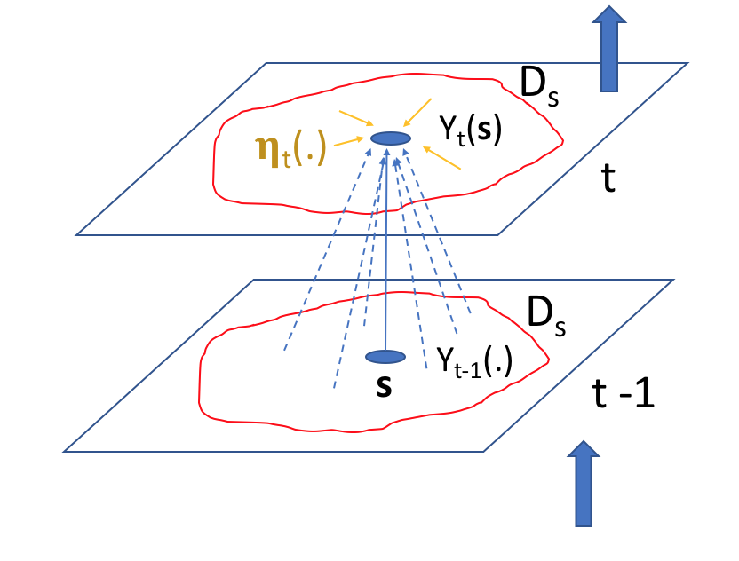
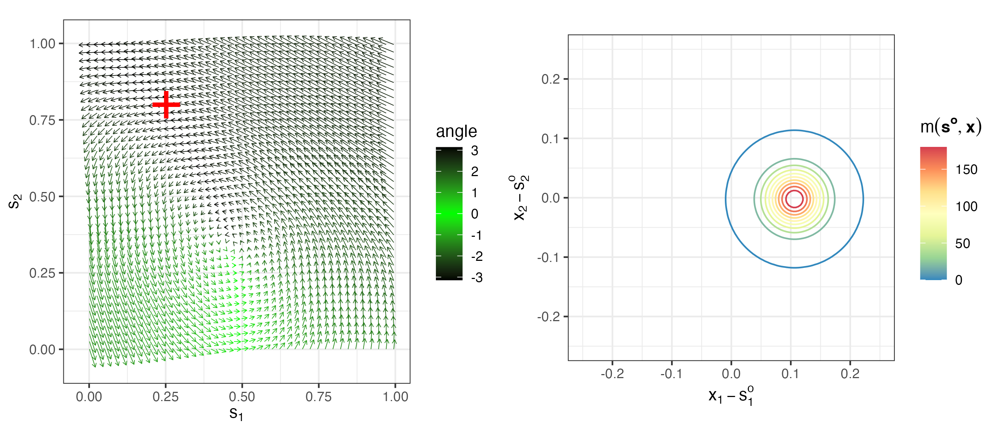
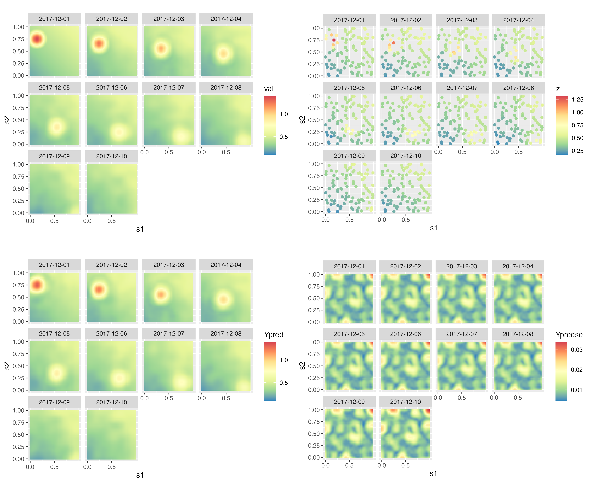
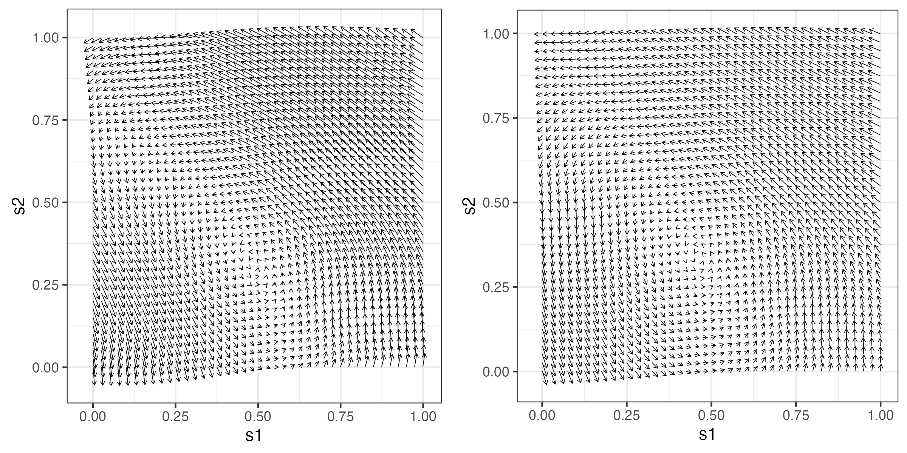
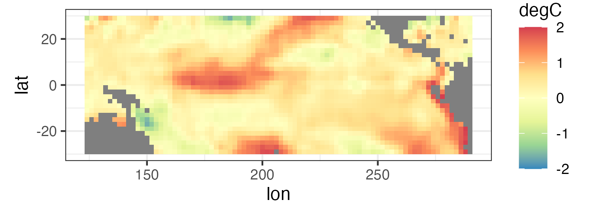
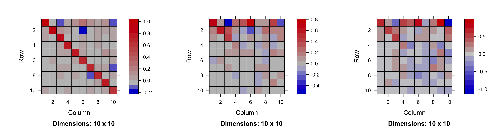

library("dplyr")
library("ggplot2")
library("STRbook")
set.seed(1)5 Dynamic Spatio-Temporal Models
Chapter 4 presented the “descriptive” approach to incorporating spatio-temporal statistical dependence into models. This chapter discusses the “dynamic” approach, closer to that holy grail of causation that scientists talk and theorize about and that often drives their experiments. In contrast to descriptive models, which fit means and covariances to spatio-temporal data, dynamic models can more easily use scientific knowledge and probability distributions to capture the evolution of current and future spatial fields from past fields.
To convince yourself that this dynamic approach has merit, just look around. If you have ever been mesmerized by waves breaking on the beach, storm clouds building on the horizon, or huge flocks of birds flying collectively in formation, you have witnessed spatio-temporal dynamics in action. What these processes (and many others) have in common is the spatial arrangement of the objects or fields changing, or evolving, from one moment to the next. This is how nature works at the macro scale - the current state of nature evolves from past states. Why does this matter if you are interested in simply modeling data that are indexed in space and time? Don’t the descriptive models presented in Chapter 4 represent nature as well?
The short answer to the second question is “yes,” but less directly. As we discuss in this chapter, it is difficult to describe all the joint and marginal dependence structures that exist in nature and respect this natural dynamic evolution - which answers the first question. While there are important differences, common to both Chapter 4 and this chapter is a statistical modeling approach where we always attempt to account for uncertainty, both in our understanding of the process of interest and in the data we observe.
The primary focus of this chapter is on linear dynamic spatio-temporal models (DSTMs) in the univariate context. Although it is reasonable, and often quite useful, to consider such processes to be continuous in time, for the sake of brevity we focus here on the more practical case where time has been discretized. However, we note that many science-oriented mechanistic models are specified from a continuous-time perspective (e.g., stochastic differential equations), and these are used to motivate the dynamic portion of the DSTM. It is beyond the scope of this book to take a continuous-time perspective, although it does fit into the DSTM framework.
For readers who have more of a time-series background, the DSTM could be thought of as a time series of spatial processes. We could consider an alternative perspective where the spatio-temporal process is a spatial process of time series, but the former perspective describes more naturally the dynamic evolutional aspect of the type of real-world phenomena discussed above. In particular, such a framework allows one not only to make predictions of spatial processes into the future, but also to make inference on parameters of models that correspond to mechanistic (e.g., physical or biological or economic …) processes. This gives DSTMs a powerful insight into causative mechanisms.
We start the chapter with a general hierarchical DSTM formulation in Section 5.1, followed by a more complete discussion of the special case of the linear Gaussian DSTM in Section 5.2. This includes brief discussion of data models, process models, and parameter models. Section 5.3 considers approaches for dealing with the curse of dimensionality in spatial processes and parameter spaces that is often present in DSTM settings. Section 5.4 gives a brief discussion of nonlinear DSTMs. More details on the technical aspects are given in a number of appendices: we present some standard estimation and prediction algorithms in Appendix C and examples of parameter reduction and process motivation through mechanistic models in Appendix D. Finally, Appendix E and Appendix F present case studies on mechanistically motivated prediction of Mediterranean winds and a machine-learning-motivated nonlinear DSTM for forecasting tropical Pacific SSTs, respectively.
5.1 General Dynamic Spatio-Temporal Models
As discussed in Chapter 1, we like to consider statistical models from a hierarchical modeling (HM) perspective. In the context of DSTMs, this means that at a minimum we must specify: a “data model” that gives a model for the data, conditioned on the true process of interest and some parameters; a “process model” that specifies the dynamic evolution of the spatio-temporal process, given some parameters; and either models for the parameters from the previous two stages (Bayesian hierarchical model, BHM), or “plug-in” estimates of the parameters (empirical hierarchical model, EHM). In this section we give a general overview of hierarchical modeling in the context of a DSTM.
Recall from our preamble that we are considering discrete time here with temporal domain \(D_t = \{0,1,2,\ldots\}\), where we assume a constant time increment \(\Delta_t = 1\) (without loss of generality). We shall consider spatial locations for our observations and our latent process to be in some spatial domain \(D_s\) (which we may consider continuous or discrete and finite, depending on the context). The data can potentially come from anywhere and any time in the spatial and temporal domains; we denote data and potential data by \(\{Z_t(\mathbf{s}): \mathbf{s}\in D_s;\ t=0,1,\ldots\}\), although only a subset is actually observed. The latent process is denoted by \(\{Y_t(\mathbf{s}): \mathbf{s}\in D_s;\ t=0,1,\ldots\}\), and we may make inference on \(Y_{t_0}(\mathbf{s}_0)\), even though there is no datum \(Z_{t_0}(\mathbf{s}_0)\). Note that, unlike the models presented in Chapter 4, we change notation slightly and use a subscript \(t\) to represent time here, as is customary for discrete-time processes with \(D_t = \{0,1,2,\ldots\}\).
5.1.1 Data Model
We begin with a data model that describes the relationship between the observations and the latent spatio-temporal process. Generally, we could write the data model in a DSTM as
\[ Z_t(\cdot) = {\cal{H}}_t({Y}_t(\cdot), {\boldsymbol{\theta}}_{d,t}, {\epsilon}_t(\cdot)),\quad t=1,\ldots,T, \]
where \(Z_t(\cdot)\) corresponds to the data at time \(t\) (and we use \((\cdot)\) to represent arbitrary spatial locations), \({Y}_t(\cdot)\) is the latent spatio-temporal process of interest, with a linear or nonlinear mapping, \({\cal{H}}_t\), that connects the data to the latent process. The data-model error, which is typically measurement error and sometimes small-scale spatio-temporal variability, is given by \({ \epsilon}_t(\cdot)\). Finally, data-model parameters, which themselves may vary spatially and/or temporally, are represented by the vector \({\boldsymbol{\theta}}_{d,t}\). An important assumption here, and in many hierarchical representations of DSTMs, is that the data \(Z_t(\cdot)\) are independent (in time) when conditioned on the true process \({Y}_t(\cdot)\) and parameters \({\boldsymbol{\theta}}_{d,t}\). Under this conditional-independence assumption, the joint distribution of the data conditioned on the true process and parameters can be represented in product form,
\[ [ \{Z_t(\cdot)\}_{t=1}^T \; | \{Y_t(\cdot)\}_{t=1}^T , \{{\boldsymbol{\theta}}_{d,t}\}_{t=1}^T ] \; = \; \prod_{t=1}^T[Z_t(\cdot) \; | \; Y_{t}(\cdot),{\boldsymbol{\theta}}_{d,t}]. \tag{5.1}\]
This is one of two key independence/dependence assumptions in DSTMs (the other is discussed in Section 5.1.2 below). Most applications consider the component distributions on the right-hand side of Equation 5.1 to be Gaussian, but it is not uncommon to consider other members of the exponential family of distributions (see Section 5.2.2 below). Indeed, a broader class of data models than the familiar Gaussian model is fairly easy to consider so long as the observations are conditionally independent given the true process. We consider specific examples of data models in Section 5.2.1.
5.1.2 Process Model
Perhaps the most important part of a DSTM is the decomposition of the joint distribution of the process in terms of conditional distributions that respect the time evolution of the spatial process. With \(Y_t(\cdot)\) corresponding to the spatial process at time \(t\), we can always factor the joint distribution using the chain rule of conditional probabilities:
\[ \begin{aligned} \left[Y_0(\cdot),\ldots,Y_T(\cdot)\right] &= [Y_T(\cdot) \mid Y_{T-1}(\cdot),\ldots,Y_0(\cdot)] \\ &\quad\times [Y_{T-1}(\cdot) \mid Y_{T-2}(\cdot),\ldots,Y_0(\cdot)] \times \dots \\ &\quad\times [Y_2(\cdot) \mid Y_1(\cdot),Y_0(\cdot)]\\ &\quad\times [Y_1(\cdot)\mid Y_0(\cdot)] \\ &\quad\times [Y_0(\cdot)], \end{aligned} \]
where, for notational simplicity, the dependence of these distributions on parameters has been suppressed. By itself, this decomposition is not all that useful because it requires a separate conditional model for \(Y_t(\cdot)\) at each \(t\). However, if we make a modeling assumption that utilizes conditional independence, then such a hierarchical decomposition can be quite useful. For example, we could make a Markov assumption; that is, conditioned on the past, only the recent past is important to explain the present. Under the first-order Markov assumption that the process at time \(t\) conditioned on all of the past is only dependent on the most recent past (and an additional modeling assumption that this process only depends on the current parameters), we get a very useful simplification,
\[ [Y_t(\cdot) | Y_{t-1}(\cdot),\ldots,Y_0(\cdot), \{{\boldsymbol{\theta}}_{p,t}\}_{t=0}^{T}] = [Y_t(\cdot) | Y_{t-1}(\cdot),{\boldsymbol{\theta}}_{p,t}], \tag{5.2}\]
for \(t=1,2,\ldots,\) so that
\[ [Y_0(\cdot),Y_1(\cdot),\ldots,Y_T(\cdot) | \{{\boldsymbol{\theta}}_{p,t}\}_{t=0}^T] = \left( \prod_{t=1}^T[Y_t(\cdot) | Y_{t-1}(\cdot), {\boldsymbol{\theta}}_{p,t}] \right) [Y_0(\cdot) | {\boldsymbol{\theta}}_{p,0}]. \tag{5.3}\]
This is the second of the key assumptions that is usually made for DSTMs (the first was discussed above in Section 5.1.1).
This first-order-Markov assumption, which is simple but powerful in spatio-temporal statistics, holds when \(\{Y_t(\cdot)\}\) follows a dynamic model of the form
\[ {Y}_t(\cdot) = {\cal M}({Y}_{t-1}(\cdot), {\boldsymbol{\theta}}_{p,t}, { \eta}_t(\cdot)),\quad t=1,2,\ldots, \tag{5.4}\]
where \({\boldsymbol{\theta}}_{p,t}\) are parameters (possibly with spatial or temporal dependence) that control the process evolution described by the evolution operator \({\cal M}\), and \(\eta_t(\cdot)\) is a spatial noise (error) process that is independent in time (i.e., \(\eta_t(\cdot)\) and \(\eta_r(\cdot)\) are independent for \(r \neq t\)). In general, this model can be linear or nonlinear and the associated conditional distribution, \([Y_t(\cdot) \; | Y_{t-1}(\cdot)]\), can be Gaussian or non-Gaussian. As in autoregressive modeling in time series, one can make higher-order Markov assumptions in this case as well, which requires additional time lags of the spatial process to be included on the right-hand side of the conditioning symbol “\(\; | \;\)” in the component distributions of Equation 5.3. We focus primarily on the first-order-Markov case here, which is usually assumed; however, note that one can always reformulate a higher-order Markov model as a first-order model, albeit increasing the dimensionality of the process, so the first-order representation in terms of probability distributions is actually quite general. One also needs to specify a distribution for the initial state, \([{Y}_0(\cdot) | {\boldsymbol{\theta}}_{p,0}]\) or condition on it. We consider specific examples of DSTM process models in Section 5.2.3.
5.1.3 Parameters
A BHM requires distributions to be assigned to the parameters defined in the data model and the process model, namely \(\{{\boldsymbol{\theta}}_{d,t}, {\boldsymbol{\theta}}_{p,t}\}.\) Specific distributional forms for the parameters (e.g., spatially or temporally varying dependence on auxiliary covariate information) depend strongly on the problem of interest. Indeed, as mentioned in Chapter 1, one of the most important aspects of “deep” hierarchical modeling is the specification of these distributions, especially when one must deal with the curse of dimensionality. In that case, the primary modeling challenge in DSTMs is to come up with ways to effectively reduce the parameter space. This is illustrated in Section 5.3.1 with regard to linear DSTMs.
Despite the power of the BHM, in many cases it is possible and sufficient to simply estimate the parameters in an EHM context. This is commonly done in state-space models in time series and often utilizes the expectation-maximization (EM) algorithm or, as is done in the engineering literature, “state augmentation,” where the process “vector” is augmented by the parameters. Again, the choice of the estimation approach is very problem-specific. We give a general EM algorithm for linear DSTMs in Section C.2.
5.2 Latent Linear Gaussian DSTMs
For illustration, we consider in this section the simplest (yet, most widely used) DSTM – where the process models in Equation 5.2 are assumed to have additive Gaussian error distributions, and the evolution operator \({\cal M}\) in Equation 5.4 is assumed to be linear. Let us suppose that we are interested in a latent process \(\{Y_t(\mathbf{s}_i)\}\) at a set of locations given by \(\{\mathbf{s}_i: i=1,\ldots,n\}\), and that we have data at locations \(\{\mathbf{r}_{j}: j=1,\ldots,m_t; \ t=0,1,\ldots,T\}\) (i.e., there could be a different number of data locations for each observation time, but we assume there is a finite set of \(m\) possible data locations to be considered; so \(m_t \leq m\)).
For simplicity, unless noted otherwise, we assume that the “locations” of interest can have either point or areal support (and, possibly different supports for the prediction locations and data locations).
5.2.1 Linear Data Model with Additive Gaussian Error
Consider the \(m_t\)-dimensional data vector, \(\mathbf{Z}_t \equiv (Z_t(\mathbf{r}_{1}),\ldots,Z_t(\mathbf{r}_{m_t}))'\), and the \(n\)-dimensional latent-process vector, \(\mathbf{Y}_t \equiv (Y_t(\mathbf{s}_1),\ldots,Y_t(\mathbf{s}_n))'\), that we wish to infer. For the \(j\)th observation at time \(t\), the linear data model with additive Gaussian error is written as
\[ Z_t(\mathbf{r}_{j}) = b_t(\mathbf{r}_{j}) + \sum_{i=1}^n h_{t,ji} Y_t(\mathbf{s}_i) + \epsilon_t(\mathbf{r}_{j}), \tag{5.5}\]
for \(t=1,\ldots,T\), where \(b_t(\mathbf{r}_{j})\) is an additive offset term for the \(j\)th observation at time \(t\), \(\{h_{t,ji}\}_{i=1}^n \equiv \mathbf{h}_{t,j}'\) are coefficients that map the latent process to the \(j\)th observation at time \(t\), and the error term \(\epsilon_t(\cdot)\) is independent of \(Y_t(\cdot)\). Since \(j=1,\ldots,m_t\), the data model can be written in vector–matrix form as
\[ \mathbf{Z}_t = \mathbf{b}_t + \mathbf{H}_t \mathbf{Y}_t + \boldsymbol{\varepsilon}_t, \quad \boldsymbol{\varepsilon}_t \sim \; Gau(\mathbf{0},\mathbf{C}_{\epsilon,t}), \tag{5.6}\]
where \(\mathbf{b}_t\) is the \(m_t\)-dimensional offset term, \(\mathbf{H}_t\) is the \(m_t \times n\) mapping matrix (note that \(\mathbf{h}'_{t,j}\) corresponds to the \(j\)th row of \(\mathbf{H}_t\)), and \(\mathbf{C}_{\epsilon,t}\) is an \(m_t \times m_t\) error covariance matrix, typically taken to be diagonal. Each of the data-model components is described briefly below.
Latent Spatio-Temporal Dynamic Process
The latent dynamic spatio-temporal process is represented by \(\mathbf{Y}_t\). This is where most of the modeling effort is focused in the latent linear DSTM framework. It is convenient in many situations to assume that \(\mathbf{Y}_t\) has mean zero; however, we present an alternative perspective in Section 5.3 below. As mentioned previously, we shall focus on first-order Markov models to describe the evolution of \(\mathbf{Y}_t\).
Additive Offset Term
There are instances where there are potential biases between the observations and the process of interest, or where one would like to be able to model \(\{Y_t(\cdot)\}\) as a mean-zero process. That is, the additive offset term, \(\mathbf{b}_t\), accounts for non-dynamic spatio-temporal structure in the data vector, \(\mathbf{Z}_t\), that allows us to consider \(\mathbf{Y}_t\) to have mean zero. One might still be interested scientifically in predicting the sum \(\mathbf{b}_t + \mathbf{H}_t \mathbf{Y}_t\) in Equation 5.6. We may assume that the additive offset term \(b_t(\mathbf{r}_{j})\) is fixed through time, space, or constant across space and time (e.g., \(b_t(\mathbf{r}_{j}) \equiv b(\mathbf{r}_{j})\), \(b_t(\mathbf{r}_{j}) \equiv b_t\), or \(b_t(\mathbf{r}_{j}) \equiv b\), respectively), or we may define it in terms of covariates (e.g., \(b_t(\mathbf{r}_{j}) \equiv \mathbf{x}'_{t,j} \boldsymbol{\beta}\), or \(b_t(\mathbf{r}_{j}) \equiv \mathbf{x}'_{t} \boldsymbol{\beta}_j\), where \(\mathbf{x}_{t,j}\) and \(\mathbf{x}_{t}\) are \(q\)-dimensional vectors of covariates and \(\boldsymbol{\beta}\) and \(\boldsymbol{\beta}_j\) are \(q\)-dimensional parameter vectors). Alternatively, we may consider the offset parameters to be either spatial or temporal random processes with distributions assigned at the next level of the model hierarchy (e.g., \(\mathbf{b}_t \sim \; Gau(\mathbf{X}_t \boldsymbol{\beta},\mathbf{C}_b)\), where \(\mathbf{C}_b\) is a positive-definite matrix constructed using the methods described in Chapter 4).
Observation Mapping Function (or Matrix)
The observation mapping matrix \(\mathbf{H}_t\) has elements \(\{h_{t,ji}\}\) that are typically assumed known. They can be any linear basis that relates the process at the prediction locations to the observations. For example, it is often quite useful to let \(\mathbf{h}_{t,j}\) correspond to a simple incidence vector (i.e., a vector of ones and zeros), so that each data location is associated with one or more of the process locations. The incidence vector can easily accommodate missing data or can serve as an “interpolator” such that each observation is related to some weighted combination of the process values.
In this simple illustration, consider the single observation in Equation 5.5 where \(n = 3\). If \(\mathbf{h}_{t,j}' = (0,0,1)\), it indicates that the observation \(Z_t(\mathbf{r}_{j})\) corresponds to the process value, \(Y_t(\mathbf{s}_3)\), at time \(t\). This is especially useful if the locations of the prediction grid are very close to (or a subset of) the observation locations and consequently are considered coincident. If \(\mathbf{h}_{t,j}' = (0.1,0.4,0)\), then the observation at location \(\mathbf{r}_{j}\) corresponds to a weighted sum of the process at locations \(\mathbf{s}_1\) and \(\mathbf{s}_2\), with more weight being given to location \(\mathbf{s}_2\). More generally, these weights can provide a simple way to deal with different spatial supports and orientations of the observations and the process. For example, the weights can correspond to the area of overlap between observation supports and process supports (see Chapter 7 of Cressie & Wikle, 2011 for details).
Tip
Recall from Section 2.2 that finding the intersections (areas or points of overlap) across spatial or spatio-temporal polygons, points, and grids can be done in a straightforward manner using the function over from the packages sp and spacetime. This function can hence be used to construct the mapping matrices \(\{\mathbf{H}_t\}\) in Equation 5.6.
Finally, in the situation where the observation locations are a subset of the process locations and \(m_t < n\), one has missing data, and this is easily accommodated via the mapping matrix. For example, if \(m_t = 2\) and \(n=3\), then \(\mathbf{Z}_t \equiv (Z_t(\mathbf{r}_{t}), Z_t(\mathbf{r}_{t}))'\), \(\mathbf{Y}_t \equiv (Y_t(\mathbf{s}_1), Y_t(\mathbf{s}_2), Y_t(\mathbf{s}_3))'\), and \(\boldsymbol{\varepsilon}_t \equiv (\epsilon_t(\mathbf{r}_{t}), \epsilon_t(\mathbf{r}_{t}))'\). If \(\mathbf{r}_{t} = \mathbf{s}_2\) and \(\mathbf{r}_{t} = \mathbf{s}_3\), the mapping matrix in Equation 5.6 is given by the incidence matrix
\[ \mathbf{H}_t = \left( \begin{array}{ccc} 0 & 1 & 0 \\ 0 & 0 & 1 \end{array}\right), \tag{5.7}\]
which indicates that observation \(Z_t(\mathbf{r}_{1})\) corresponds to process value \(Y_t(\mathbf{s}_2)\), observation \(Z_t(\mathbf{r}_{2})\) corresponds to process value \(Y_t(\mathbf{s}_3)\), and process value \(Y_t(\mathbf{s}_1)\) does not have a corresponding observation at time \(t\). This way to accommodate missing information is very useful for HMs, because it allows one to focus the modeling effort on the latent process \(\{Y_t(\cdot)\}\), and the process is oblivious to which data are missing. Some would argue that a downside of this is the need to pre-specify the locations at which one is interested in modeling the process, but, with a sufficiently fine grid, this could effectively be everywhere in the spatial domain, \(D_s\).
Although it is possible in principle to parameterize the mapping matrix and/or estimate it directly in some cases, we shall typically assume that it is known. Otherwise, one would have to be careful when specifying and estimating the process-model parameters to mitigate identifiability problems.
Tip
Recall from Section 4.4.1 that matrices such as that given in Equation 5.7 tend to have many zeros and hence are sparse. Two R packages that cater to sparse matrices are Matrix and spam. Sparse matrices are stored and operated on differently than the standard dense R matrices, and they have favorable memory and computational properties. However, sparse matrix objects should only be used when the number of non-zero entries is small, generally on the order of 5% or less of the total number of matrix elements.
Error Covariance Matrix
In the linear Gaussian DSTM, the additive error process \(\{\epsilon_t(\mathbf{r}_{j})\}\) is assumed to have mean zero, is Gaussian, and can generally include dependence in space or time (although we will typically assume that the errors are independent in time, as is customary). So, when considering \(\epsilon_t(\cdot)\) at a finite set of \(m_t\) observation locations, namely \(\boldsymbol{\varepsilon}_t \equiv (\epsilon_t(\mathbf{r}_{1}), \ldots, \epsilon_t(\mathbf{r}_{m_t}))'\), we need to specify time-varying covariance matrices \(\{\mathbf{C}_{\epsilon,t}\}\). In practice, given that most of the interesting dependence structure in the observations is contained in the process, and recalling that in the data model we are conditioning on that process, the structure of \(\mathbf{C}_{\epsilon,t}\) should be pretty simple. Indeed, there is often an assumption that these data-model errors are independent with constant (in time and space) variance, so that \(\mathbf{C}_{\epsilon,t} = \sigma^2_\epsilon \mathbf{I}_{m_t}\), where \(\sigma^2_\epsilon\) represents the measurement-error variance. If this assumption is not reasonable, then in situations where the data-model error covariance matrix is assumed constant over time (e.g., \(\mathbf{C}_{\epsilon,t} = \mathbf{C}_{\epsilon}\)) and \(m_t = m\), one might estimate the \(m \times m\) covariance matrix \(\mathbf{C}_{\epsilon}\) directly if \(m\) is not too large (see Section C.2), or one might parameterize \(\mathbf{C}_{\epsilon}\). For example, in the case where the data-model error variances are heteroskedastic in space, one might model \(\mathbf{C}_{\epsilon} = \textrm{diag}(\mathbf{v}_{\epsilon})\), and estimate the elements of \(\mathbf{v}_{\epsilon}\). Alternatively, if there is spatial dependence one might parameterize \(\mathbf{C}_{\epsilon}\) in terms of some valid spatial covariance functions (e.g., the Matérn class). The specific choice is very problem-dependent. It is important to recall the central principle of hierarchical modeling discussed in Chapter 1, in Section 3.5, and in greater detail in Section 4.3, which is that we attempt to place as much of the dependence structure as possible in the conditional mean, which simplifies the conditional-covariance specification dramatically.
5.2.2 Non-Gaussian and Nonlinear Data Model
Recall the general data model from Section 4.5, rewritten here to correspond to the discrete-time case. For \(t=1,2,\ldots,\) let
\[ Z_t(\mathbf{s}) | Y_t(\mathbf{s}), \gamma \; \sim \; EF(Y_t(\mathbf{s}), \gamma), \]
where \(EF\) corresponds to a distribution from the with scale parameter \(\gamma\) and mean \(Y_t(\mathbf{s})\). Now, consider a transformation of the mean response \(g(Y_t(\mathbf{s})) \equiv \tilde{Y}_t(\mathbf{s})\) using a specified monotonic link function \(g(\cdot)\). Using a standard GLMM framework, we can model the transformed process \(\tilde{Y}_t(\mathbf{s})\) as a latent Gaussian DSTM (Section 5.2.3) with or without the use of process/parameter reduction methods (Section 5.3). Note that we can also include a “mapping matrix” to this non-Gaussian data model as we did with the Gaussian data model in Section 5.2.1. That is, in a matrix formulation we could consider
\[ \mathbf{Z}_t | \mathbf{Y}_t, \gamma \; \sim \; EF(\mathbf{H}_t \mathbf{Y}_t, \gamma), \]
where the distribution \(EF\) is taken elementwise, and \(\mathbf{H}_t\) is an incidence matrix or change-of-support matrix as described in Section 5.2.1.
It is sometimes useful to consider a nonlinear transformation of the latent process \(\{Y_t(\cdot)\}\) in a data model even if the error term is Gaussian. For example, analogous to equation (7.39) in Cressie & Wikle (2011), one can modify Equation 5.6 above to accommodate a transformation of the elements of the process vector:
\[ \mathbf{Z}_t = \mathbf{b}_t + \mathbf{H}_t \mathbf{Y}_t^{a} + \boldsymbol{\varepsilon}_t, \quad \boldsymbol{\varepsilon}_t \sim \; Gau(\mathbf{0},\mathbf{C}_{\epsilon,t}), \tag{5.8}\]
where the coefficient \(\{-\infty < a < \infty\}\) corresponds to a (applied to each element of \(\mathbf{Y}_t\)), which is one of the simplest ways to accommodate nonlinear or non-Gaussian processes in the data model. In general, \(\{\mathbf{Y}_t^a\}\) may not generate a linear Gaussian model, but the additivity of the errors \(\{\boldsymbol{\varepsilon}_t\}\) is an important part of Equation 5.8. As an example, if \(\{Y_t(\cdot)\}\) is positive valued, then this is analogous to the famed Box–Cox transformation. In some applications it is reasonable to assume that the transformation power \(a\) in Equation 5.8 may vary with space or time, and may depend on covariates.
As with non-dynamic spatio-temporal models with non-Gaussian errors (Chapter 4), computation for estimation and prediction is more problematic when one considers non-Gaussian or nonlinear data models.
5.2.3 Process Model
Linear Markovian spatio-temporal process models generally assume that the value of the process at a given location at the present time is made up of a weighted combination (or is a “smoothed version”) of the process throughout the spatial domain at previous times, plus an additive, Gaussian, spatially coherent “innovation” (see the schematic in Figure 5.1). This is perhaps best represented in a continuous-spatial context through an integro-difference equation (IDE). Specifically, a first-order spatio-temporal IDE process model is given by
\[ Y_t(\mathbf{s}) = \int_{D_s} m(\mathbf{s},\mathbf{x};\boldsymbol{\theta}_p) Y_{t-1}(\mathbf{x}) \, \textrm{d}\mathbf{x}+ \eta_t(\mathbf{s}), \quad \mathbf{s},\mathbf{x}\in D_s, \tag{5.9}\]
for \(t=1,2,\ldots,\) where \(m(\mathbf{s},\mathbf{x};\boldsymbol{\theta}_p)\) is a transition kernel, depending on parameters \(\boldsymbol{\theta}_p\) that specify “redistribution weights” for the process at the previous time over the spatial domain, \(D_s\), and \(\eta_t(\cdot)\) is a time-varying (but statistically independent in time) continuous mean-zero Gaussian spatial process independent of \(Y_{t-1}(\cdot)\). Generally, one of the parameters of \(\boldsymbol{\theta}_p\) is just a multiplicative scalar that controls the temporal stability; see Equation 5.23 in Lab 5.2. Note that we assume here, as one often does, that the parameter vector \(\boldsymbol{\theta}_p\) does not vary with time, but it could do so in general. So, from Equation 5.9, the process at location \(\mathbf{s}\) and time \(t\) is given by the weighted average (integral) of the process throughout the domain at the past time, where the weights are given by the transition kernel, \(m(\cdot,\cdot)\). The innovation given by \(\eta_t(\cdot)\), which is independent of \(Y_{t-1}(\cdot)\), has spatial dependence, is typically Gaussian, and accounts for spatial dependencies in \(Y_t(\cdot)\) that are not captured by this weighted average. Another way to think about \(\eta_t(\cdot)\) is that it adds back smaller-scale dependence that is removed in the inherent smoothing that occurs when \(\{Y_{t-1}(\cdot)\}\) is averaged over space. In general, \(\int_{D_s} m(\mathbf{s},\mathbf{x};\boldsymbol{\theta}_p) \,\textrm{d}\mathbf{x}< 1\) is needed for the process to be stable (non-explosive) in time. Note that the model in Equation 5.9 implicitly assumes that the process \(Y_t(\cdot)\) has mean zero. In some cases it may be appropriate to model a non-zero mean directly in the process, as is shown generally in Equation 5.16 below and specifically for the IDE in Lab 5.2.

In the case where one has a finite set of prediction spatial locations (or regions) \(D_s = \{\mathbf{s}_1,\mathbf{s}_2,\ldots,\mathbf{s}_n\}\) of interest (e.g., an irregular lattice or a regular grid), the first-order IDE evolution process model Equation 5.9 can be discretized and written as a stochastic difference equation,
\[ Y_t(\mathbf{s}_i) = \sum_{j=1}^n m_{ij}(\boldsymbol{\theta}_p) \;Y_{t-1}(\mathbf{s}_j) + \eta_t(\mathbf{s}_i), \tag{5.10}\]
for \(t=1,2,\ldots,\) with transition (redistribution) weights \(m_{ij}(\boldsymbol{\theta}_p)\) that depend on parameters \(\boldsymbol{\theta}_p\). In this case, the process at \(Y_t(\mathbf{s}_i)\) considers a weighted combination of the values of the process at time \(t-1\) and at a discrete set of spatial locations.
Now, denoting the process vector \(\mathbf{Y}_t \equiv (Y_t(\mathbf{s}_1),\ldots,Y_t(\mathbf{s}_n))'\), Equation 5.10 can be written in vector–matrix form as a linear first-order vector autoregression DSTM,
\[ \mathbf{Y}_t = \mathbf{M}\mathbf{Y}_{t-1} + \boldsymbol{\eta}_t, \tag{5.11}\]
where the \(n \times n\) transition matrix is given by \(\mathbf{M}\) with elements \(\{m_{ij}\}\), and the additive spatial error process \(\boldsymbol{\eta}_t \equiv (\eta_t(\mathbf{s}_1),\ldots,\eta_t(\mathbf{s}_n))'\) is independent of \(\mathbf{Y}_{t-1}\) and is specified to be mean-zero and Gaussian with spatial covariance matrix \(\mathbf{C}_{\eta}\). The stability (non-explosive) condition in this case requires that the maximum modulus of the eigenvalues of \(\mathbf{M}\) (which may be complex-valued) be less than 1 (see Note 5.1).
We have assumed in our discussion of the process model that the \(\{Y_t(\mathbf{s}_i)\}\) have mean zero. Although it is possible to include an offset term in the Markovian process model at this stage, in this section we consider such an offset only in the data model as described above for Equation 5.6. However, as we discuss below in Section 5.3, it is reasonable to consider the offset as part of this “process” decomposition, typically including covariate effects and/or seasonality.
Usually, \(\mathbf{M}\) and \(\mathbf{C}_{\eta}\) are assumed to depend on parameters \(\boldsymbol{\theta}_p\) and \(\boldsymbol{\theta}_\eta\), respectively, to mitigate the curse of dimensionality (here, the exponential increase in the number of parameters) that often occurs in spatio-temporal modeling. As discussed below in Section 5.3, the parameterization of these matrices (particularly \(\mathbf{M}\)) is one of the greatest challenges in DSTMs, and it is facilitated by using parameter models in a BHM. However, in relatively simple applications of fairly low dimensionality and large sample sizes (e.g., when \(n\) is small and \(T \gg n\)), one can estimate \(n \times n\) matrices \(\mathbf{M}\) and \(\mathbf{C}_{\eta}\) directly in an EHM, as is commonly done in state-space models of time series (see Section C.2).
Note 5.1: Eigenvalues of the Transition Matrix
Consider the first-order vector autoregressive model,
\[ \mathbf{Y}_t = \mathbf{M}\mathbf{Y}_{t-1} + \boldsymbol{\eta}_t, \]
where \(\mathbf{Y}_t\) is an \(n\)-dimensional vector, and \(\mathbf{M}\) is an \(n \times n\) real-valued transition matrix. The characteristic equation obtained from the determinant,
\[ \text{det}(\mathbf{M}- \lambda \mathbf{I}) = 0, \]
has \(n\) eigenvalues (latent roots), \(\{\lambda_i: i=1,\ldots,n\}\), some of which may be complex numbers. Each eigenvalue has a modulus and is associated with an eigenvector (taken together, an eigenvalue–eigenvector pair is sometimes referred to as an eigenmode) that describes the behavior associated with that eigenvalue. As discussed in Cressie and Wikle (2011, Section 3.2.1), the eigenvalues and eigenvectors can tell us quite a bit about the dynamical properties of the model. First, assume in general that \(\lambda_i = a_i + b_i \sqrt{-1}\) (where \(b_i = 0\) if \(\lambda_i\) is real-valued), and define the complex magnitude (or “modulus”) to be \(|\lambda_i| = \sqrt{a_i^2 + b_i^2}\). We note that if \(\text{max}\{|\lambda_i|: i=1,\ldots,n\} \ge 1\), then the eigenmode, and hence the model, is unstable, and \(\mathbf{Y}_t\) will grow without bound as \(t\) increases. Conversely, if the maximum modulus of all the eigenvalues is less than 1, then the model is stable. Since \(\mathbf{M}\) is real-valued, complex eigenvalues come in complex conjugate pairs, and their eigenmodes are associated with oscillatory behavior in the dynamics (either damped or exponentially growing sinusoids, depending on whether the modulus of the corresponding eigenvalue is less than 1 or greater than or equal to 1, respectively). In contrast, real-valued eigenvalues correspond to non-oscillatory dynamics.
Intuition for Linear Dynamics
Parameterizations of realistic dynamics should respect the fact that spatio-temporal interactions are crucial for dynamic propagation. For example, in the linear IDE model (Equation 5.9), the asymmetry and rate of decay of the transition kernel \(m(\mathbf{s},\mathbf{x};\boldsymbol{\theta}_p)\), relative to a location (here, \(\mathbf{s}\)), control propagation (linear advection) and spread (diffusion), respectively. Figure 5.2 shows Hovmöller plots of four one-dimensional (in space) simulations of a spatio-temporal IDE process and their respective transition kernels evaluated at \(s_0 = 0.5\). Panels (a) and (b) show the inherent diffusive nature of the process depending on kernel width; that is, spatially coherent disturbances tend to spread across space (diffuse) at a greater rate when the kernel is wider (i.e., has a larger aperture), which leads to more averaging from one time to the next. However, note that there is no “slanting” in the plot through time, indicating that there is no propagation through time (see Section 2.3.3 for an interpretation of Hovmöller plots). In contrast, panels (c) and (d) show clear evidence of propagation, to the left when the kernel is offset to the right, and to the right when the kernel is offset to the left. The intuition here is that the offset kernel pulls information from one particular direction, and redistributes it in the opposite direction, leading to propagation. More complex kernels (e.g., multimodal, or spatially varying) can lead to even more complex behavior. As we discuss in Section 5.3, these basic properties of the transition (redistribution) kernel can suggest efficient parameterizations of linear DTSM process models.

As mentioned above, there are conditions on the transition kernel (or matrix in the discrete-space case) that correspond to unstable (explosive in time) behavior. From a dynamic perspective, a stable process implies that small perturbations to the spatial field will eventually decay to the equilibrium (mean) state. Because many real-world spatio-temporal processes are nonlinear, it can be the case that if one fits an unconstrained linear DSTM to data that come from such a nonlinear process, then the fitted model is unstable (explosive, with exponential “growth”). This is not necessarily a bad thing, as it provides immediate feedback that the wrong model is being fitted or that the finite-time window for the observations suggests a transient period of growth (see Note 5.2). In some cases, it can actually be helpful if the confidence (or credible) intervals of the transition-matrix parameters include the explosive boundary because the mean of the predictive distribution may show growth (a nonlinear feature) since it effectively averages over realizations that are both explosive and non-explosive. Of course, long-lead-time forecasts from such a model are problematic as exponential-growth models are only useful for very short-term predictions unless there is some nonlinear control mechanism (e.g., density-dependent carrying capacities in ecological applications).
Note 5.2: Transient Growth
An interesting and less appreciated aspect of linear DSTMs is the fact that they can be stable yet still accommodate so-called “transient growth.” That is, there are periods in time when the process does have brief excursions from its stable state. Essentially, if the transition operator is “non-normal” (i.e., in the discrete-space case, if \(\mathbf{M}\mathbf{M}' \neq \mathbf{M}' \mathbf{M}\), in which case, the eigenvectors of \(\mathbf{M}\) are non-orthogonal), but still stable (e.g., the maximum modulus of the eigenvalues of \(\mathbf{M}\) is less than 1; see Note 5.1), then the linear dynamic process can exhibit transient growth. This means that even though each eigenvector of the stable \(\mathbf{M}\) is decaying asymptotically in time, there can be local-in-time (transient) periods where there is significant (even orders of magnitude) growth. This is due to the constructive interference of the non-orthogonal eigenvectors of the transition operator, \(\mathbf{M}\). Since almost all real-world linear processes correspond to non-normal transition operators, this has important implications concerning how one might parameterize \(\mathbf{M}\), as discussed in Section 5.3 below.
5.3 Process and Parameter Dimension Reduction
The latent linear Gaussian DSTM described in Section 5.2 above has unknown parameters associated with the process model \(\mathbf{C}_\eta\), the transition operator \(m(\mathbf{s},\mathbf{x};\boldsymbol{\theta}_p)\) or matrix \(\mathbf{M}\), and the initial-condition distribution (e.g., \(\boldsymbol{\mu}_0\) and \(\mathbf{C}_0\)). With the linear Gaussian data model, one typically considers a fairly simple parameterization of \(\mathbf{C}_\epsilon\) (e.g., \(\mathbf{C}_\epsilon = \sigma^2_\epsilon \mathbf{I}\)) or perhaps the covariance matrix implied by a simple spatial random process that has just a few parameters (e.g., a Matérn spatial covariance function or a spatial conditional autoregressive process). One of the greatest challenges when considering DSTMs in hierarchical statistical settings is the curse of dimensionality associated with the process-model level of the DSTM. For the fairly common situation where the number of spatial locations (\(n\)) is much larger than the number of time replicates (\(T\)), even the fairly simple linear DSTM process model Equation 5.11 is problematic, as there are on the order of \(n^2\) parameters to estimate. To proceed, one must reduce the number of free parameters to be inferred in the model and/or reduce the dimension of the spatio-temporal dynamic process. These two approaches are discussed briefly below.
5.3.1 Parameter Dimension Reduction
Consider the process-error spatial variance-covariance matrix, \(\mathbf{C}_\eta\). In complex modeling situations, it is seldom the case that one would estimate this as a full positive-definite matrix in the DSTM. Rather, given that these are spatial covariance matrices, we would either use one of the common spatial covariance-function representations or a basis-function random-effects representation (as in Chapter 4 or in Section 5.3.2 below).
Generally, the transition-matrix parameters in the DSTM process model require the most care, as there could be as many as \(n^2\) of them and, as discussed above, the linear dynamics of the process are largely controlled by these parameters. In the case of the simple linear DSTM model Equation 5.11, one could parameterize the transition matrix \(\mathbf{M}\) simply as a random walk (i.e., \(\mathbf{M}= \mathbf{I}\)), a spatially homogeneous autoregressive process (i.e., \(\mathbf{M}= \theta_p \mathbf{I}\)), or a spatially varying autoregressive process (\(\mathbf{M}= \mbox{diag}(\boldsymbol{\theta}_p)\)). The first two parameterizations are somewhat unrealistic for most real-world dynamic processes and are not recommended, but the last parameterization is more useful for real-world processes.
As an example of the last parameterization described above, consider the process model where \(\mathbf{C}_\eta = \sigma_\eta^2 \mathbf{I}\), and \(\mathbf{M}= \mbox{diag}(\boldsymbol{\theta}_p)\). We can decompose the first-order conditional distributions in this case as
\[ [\mathbf{Y}_t | \mathbf{Y}_{t-1}, \boldsymbol{\theta}_p, \sigma^2_\eta] = \prod_{i=1}^n [Y_t(\mathbf{s}_i) | Y_{t-1}(\mathbf{s}_i), \theta_{p}(i), \sigma^2_\eta],\quad t=1,2,\ldots. \]
Thus, conditional on the parameters \(\boldsymbol{\theta}_p = (\theta_p(1),\ldots,\theta_p(n))'\), we have spatially independent univariate AR(1) processes at each spatial location (i.e., only the \(Y\)-value at the previous time at the same spatial location influences the transition). However, if \(\boldsymbol{\theta}_p\) is random and has spatial dependence, then if we integrate it out, the marginal conditional distribution, \([\mathbf{Y}_t | \mathbf{Y}_{t-1}, \sigma^2_\eta]\), can imply that all of the elements of \(\mathbf{Y}_{t-1}\) influence the transition to time \(t\) at all spatial locations (i.e., this is a spatio-temporal process). Recall from Section 4.3 that this building of dependence through marginalization is a fundamental principle of deep hierarchical modeling, and it provides a simple and often effective way to construct complex spatio-temporal models (see also Note 4.3). But, although we can accommodate fairly complex spatio-temporal dependence in this marginalization, it is important to note that the conditional model does not account directly for interactions across space and time. This limits its utility in applications, where more realistic conditional dynamic specifications are required. Thus, we often seek parameterizations that directly include such interactions in the conditional model.
Recall from our discussion of the intuition behind linear dynamics in Section 5.2.3 that the transition kernel is very important. This suggests that we can model realistic linear behavior by parameterizing the kernel shape (particularly its decay in the spatial domain and its asymmetry) in terms of a relatively small number of parameters (e.g., in the transition kernel case, the kernel width, or variance, and shift, or mean, parameters). More importantly, if we allow these relatively few parameters to vary with space in a principled fashion, then we can accommodate a variety of quite complex dynamic behaviors. The strength of the HM approach is that one can fairly easily do this by endowing these kernel parameters with spatial structure at the parameter-model level of the hierarchy (e.g., allowing them to be a function of covariates and/or specifying them as spatial random processes).
As an example, consider the IDE process model given in Equation 5.9, where we specify a Gaussian-shape transition kernel as a function of \(x\) relative to the location \(s\) (for simplicity, in a one-dimensional spatial domain):
\[ m(s,x;\boldsymbol{\theta}_p) = {\theta_{p,1}} \exp\left(-\frac{1}{\theta_{p,2}}(x - \theta_{p,3} - s)^2 \right) , \tag{5.12}\]
where the kernel amplitude is given by \(\theta_{p,1}\), the length-scale (variance) parameter \(\theta_{p,2}\) corresponds to a kernel scale (aperture) parameter (i.e., the kernel width increases as \(\theta_{p,2}\) increases), and the mean (shift) parameter \(\theta_{p,3}\) corresponds to a shift of the kernel relative to location \(s\). Notice that Equation 5.12 is positive but need not integrate to 1 over \(x\). Recall from Figure 5.2 the dynamical implication of changing the shift parameter. Specifically, if \(\theta_{p,3}\) is positive (negative) it leads to leftward (rightward) movement because it induces asymmetry relative to location \(s\). In addition, Figure 5.2 shows the dynamic implications when changing the kernel width/scale (e.g., wider kernels suggest faster decay). So, to obtain more complex dynamical behavior, we can allow these parameters to change with space. For example, suppose the mean (shift) parameter satisfies \(\theta_{p,3}(s) = \mathbf{x}(s)' \boldsymbol{\beta}+ \omega(s)\), where \(\mathbf{x}(s)\) corresponds to covariates at spatial location \(s\), \(\boldsymbol{\beta}\) are the associated regression parameters, and \(\omega(s)\) could correspond to a spatial (although, in some cases, it may be sufficient to omit the error term \(\omega(s)\); see Lab 5.2 for an example). We can also allow the parameter \(\theta_{p,2}\) to vary with space, but it is typically the case that \(\theta_{p,3}\) is the more important of the two parameters. Figure 5.3 shows an example of a spatially varying kernel in two dimensions, and the kernel evaluated at one specific spatial location. Lab 5.1 implements the simple one-dimensional IDE process model and explores its simulation. Lab 5.2 shows how one can do spatio-temporal modeling and inference in \(\texttt{R}\) using the package IDE.

Although the IDE kernel representation suggests efficient parameterizations for linear dynamics in continuous space, there are many occasions where we seek efficient parameterizations in a discrete-space setting or in the context of random effects in basis-function expansions. In the case of the former, one of the most useful such parameterizations corresponds to transition operators that only consider local spatial neighborhoods. We describe these below and provide a mechanistically motivated example. We defer the discussion of dynamics for random effects in basis-function expansions to Section 5.3.2.
Lagged-Nearest-Neighbor Representations
The importance of the rate of decay and asymmetry in IDE transition-kernel representations suggests that for discrete space a very parsimonious, yet realistic, dynamic model can be specified in terms of a simple lagged-nearest-neighbor (LNN) parameterization, for example,
\[ Y_t(\mathbf{s}_i) = \sum_{\mathbf{s}_j \in {\cal N}_i} m_{ij} Y_{t-1}(\mathbf{s}_j) + \eta_t(\mathbf{s}_i), \tag{5.13}\]
where \({\cal N}_i\) corresponds to a pre-specified neighborhood of the location \(\mathbf{s}_i\) (including \(\mathbf{s}_i\)), for \(i=1,\ldots,n\), and where we specify \(m_{ij} = 0, \mbox{ for all } \;\mathbf{s}_j \not\in {\cal N}_i\). Such a parameterization reduces the number of free parameters from the order of \(n^2\) to the order of \(n\). It is often reasonable to further parameterize the transition coefficients in Equation 5.13 to account for decay (spread or diffusion) rate and asymmetry (propagation direction). In some cases, homogeneities of the transitions would result in a single parameter to control a particular type of neighbor (e.g., a parameter for the west neighbor and east neighbor transition coefficients), or, in other cases, it would be more appropriate to let these parameters vary in space as well (as with the IDE transition-kernel example above).
Motivation of an LNN with a Mechanistic Model
The LNN parameterization can be motivated by many mechanistic models, such as those suggested by standard discretization of integro-differential or partial differential equations (PDEs). In the latter case, the parameters \(m_{ij}\) in Equation 5.13 can be parameterized in terms of other mechanistically motivated knowledge, such as spatially varying diffusion or advection coefficients. Again, in this framework the \(\{m_{ij}\}\) are either estimated directly in an EHM or modeled at the next level of a BHM (typically, with some sort of spatial structure). As an example, consider the basic linear, non-random, advection–diffusion PDE,
\[ \frac{\partial Y}{\partial t} = a \frac{\partial^2 Y}{\partial x^2}+ b \frac{\partial^2 Y}{\partial y^2} + u \frac{\partial Y}{\partial x} + v \frac{\partial Y}{\partial y}, \tag{5.14}\]
conditional on \(a\), \(b\), \(u\), and \(v\), where \(a\) and \(b\) are diffusion coefficients that control the rate of spread, and \(u\) and \(v\) are advection parameters that account for the process “flow” (i.e., advection). Simple finite-difference discretization of such PDEs on a two-dimensional equally spaced finite grid (see Section D.1) can lead to LNN specifications of the form
\[ \mathbf{Y}_t = \mathbf{M}(\boldsymbol{\theta}_p) \mathbf{Y}_{t-1} + \mathbf{M}_b(\boldsymbol{\theta}_p) \mathbf{Y}_{b,t} + \boldsymbol{\eta}_t, \]
where \(\mathbf{Y}_t\) corresponds to a vectorization of the non-boundary grid points, with \(\mathbf{M}(\boldsymbol{\theta}_p)\) a five-diagonal transition matrix with diagonals corresponding to functions of \(a\), \(b\), \(u\), \(v\) and the discretization parameters (e.g., these five diagonals correspond to \(\{\theta_{p,1}, \ldots,\theta_{p,5}\}\) in Section D.1). Such discretizations should account for boundary affects, and so we specify \(\mathbf{Y}_{b,t}\) to be a boundary process (either fixed or assumed to be random) with \(\mathbf{M}_b(\boldsymbol{\theta}_p)\) the associated transition operator based on the finite-difference discretization of the differential operator. The additive error process \(\{\boldsymbol{\eta}_t\}\) is assumed to be Gaussian, mean-zero, and independent in time. In the more realistic case where the parameters \(a, b\) and/or \(u, v\) vary with space, the vector \(\boldsymbol{\theta}_p\) varies with space as well, and we model it either in terms of covariates or as a spatial random process. The point is that we allow these mechanistic models to suggest or motivate LNN parameterizations rather than our specifying the structure directly. Appendix D presents detailed examples of DSTMs motivated by mechanistic models, and the case study in Appendix E presents an implementation of such a model for the Mediterranean winds data set described in Chapter 2.
5.3.2 Dimension Reduction in the Process Model
As discussed in Section 4.4, it is often the case that to reduce process dimensionality we could consider the spatio-temporal process of interest as a decomposition in terms of “fixed” effects and random effects in a basis-function expansion. This is particularly helpful for DSTM process models, as it is often the case that the important dynamics exist on a fairly low-dimensional space (i.e., manifold). Consider an extension to the spatial basis-function mixed-effects model (Equation 4.29) from Section 4.4.2,
\[ Y_t(\mathbf{s}) = \mathbf{x}_t(\mathbf{s})' \boldsymbol{\beta}+ \sum_{i=1}^{n_\alpha} \phi_i(\mathbf{s}) \alpha_{i,t} + \sum_{j=1}^{n_\xi} \psi_j(\mathbf{s}) \xi_{j,t} + \nu_t(\mathbf{s}), \tag{5.15}\]
where the term with covariates, \(\mathbf{x}_t(\mathbf{s})' \boldsymbol{\beta}\), might be interpreted as a “fixed” or “deterministic” component with fixed effects \(\boldsymbol{\beta}\); the first basis-expansion term, \(\sum_{i=1}^{n_\alpha} \phi_i(\mathbf{s}) \alpha_{i,t}\), contains known spatial \(\{\phi_i(\cdot)\}\) and associated dynamically evolving random coefficients (i.e., random effects), \(\{\alpha_{i,t}\}\); the residual basis-expansion term, \(\sum_{j=1}^{n_\xi} \psi_j(\mathbf{s}) \xi_{j,t}\), can account for non-dynamic spatio-temporal structure, where the , \(\{\psi_j(\cdot)\}\), are again assumed known, and the random effects \(\{\xi_{j,t}\}\) are typically non-dynamic or at least contain simple temporal behavior. The micro-scale term, \(\nu_t(\cdot)\), is assumed to be a with mean zero and independent in time. The focus here is on the dynamically evolving random effects, \(\{\alpha_{i,t}\}\).
As mentioned above, useful reductions in process dimension can be formulated with the understanding that the essential dynamics for spatio-temporal processes typically exist in a fairly low-dimensional space. This is helpful because, instead of having to model the evolution of, say, the \(n\)-dimensional vector \(\mathbf{Y}_t\), one can model the evolution of a much lower-dimensional (of dimension \(n_\alpha\)) process \(\{\boldsymbol{\alpha}_t\}\), where \(n_\alpha \ll n\). It is helpful to consider the vector form of Equation 5.15:
\[ \mathbf{Y}_t = \mathbf{X}_t \boldsymbol{\beta}+ \boldsymbol{\Phi}\boldsymbol{\alpha}_t + \boldsymbol{\Psi}\boldsymbol{\xi}_t + \boldsymbol{\nu}_t, \tag{5.16}\]
where \(\mathbf{X}_t\) is an \(n \times p\) matrix that could be time-varying and can be interpreted as a spatial offset corresponding to large-scale non-dynamical features and/or covariate effects, \({\boldsymbol{\Phi}}\) is an \(n \times n_\alpha\) matrix of basis vectors corresponding to the latent dynamic coefficient process, \(\{\boldsymbol{\alpha}_t\}\), and \(\boldsymbol{\Psi}\) is an \(n \times n_\xi\) matrix of basis vectors corresponding to the latent coefficient process, \(\{\boldsymbol{\xi}_t\}\). Typically, \(\{\boldsymbol{\xi}_t\}\) is assumed to have different dynamic characteristics than \(\{\boldsymbol{\alpha}_t\}\), or this component might account for non-dynamic spatial variability. The error process \(\{\boldsymbol{\nu}_t\}\) is Gaussian and assumed to have mean zero with relatively simple temporal dependence structure (usually independence).
The evolution of the latent process \(\{\boldsymbol{\alpha}_t\}\) can proceed according to the linear equations involving a transition matrix, discussed earlier. For example, one could specify a first-order vector autoregressive model (VAR(1)),
\[ \boldsymbol{\alpha}_t = \mathbf{M}_\alpha \boldsymbol{\alpha}_{t-1} + \boldsymbol{\eta}_t, \tag{5.17}\]
where \(\mathbf{M}_\alpha\) is the \(n_\alpha \times n_\alpha\) transition matrix, and \(\boldsymbol{\eta}_t \sim Gau(\mathbf{0},\mathbf{C}_\eta)\) (which are assumed to be independent of \(\boldsymbol{\alpha}_{t-1}\) and independent in time). The matrices \(\mathbf{M}_\alpha\) and \(\mathbf{C}_\eta\) in Equation 5.17 are often relatively simple in structure, depending on the nature of the real-world process and the type of basis functions considered. However, even in this low-dimensional context (\(n_\alpha \ll n\)), in many cases parameter-space reduction may still be necessary. One could consider the simple structures that were discussed in the context of linear DSTM process models (e.g., random walks, independent AR models, nearest-neighbor models). Typically, it is important, for the reasons discussed in Section 5.2.3 and Note 5.2, that the transition operator be non-normal (i.e., \(\mathbf{M}_\alpha' \mathbf{M}_\alpha \neq \mathbf{M}_\alpha \mathbf{M}_\alpha'\)), so one should consider non-diagonal transition matrices in most cases. Also, the notion of “neighbors” is not always well defined in these formulations. If the basis functions given in \(\boldsymbol{\Phi}\) are such that the elements of \(\boldsymbol{\alpha}_t\) are not spatially indexed (e.g., in the case of global basis functions such as some types of splines, Fourier, EOFs, etc.), then a neighbor cannot be based on physical space (but perhaps it can be based on other characteristics, such as spatial scale). It is important to note that mechanistic knowledge can also be used in this case to motivate parameterizations for \(\mathbf{M}_\alpha\). We illustrate a couple of such cases, one for a “spectral” representation of a PDE in Section D.2, and one for an IDE process in Section D.3. Lab 5.3 provides an example in which \(\mathbf{M}_\alpha\) and \(\mathbf{C}_\eta\) are estimated by the method of moments and by an EM algorithm (see Appendix C for more details about these algorithms).
Tip
If one is able to write down the data model as \(\mathbf{Z}_t = \mathbf{H}_t \mathbf{Y}_t + \boldsymbol{\varepsilon}_t,\ \boldsymbol{\varepsilon}_t \sim Gau(\mathbf{0},\mathbf{C}_{\epsilon,t}),\) and the process model as \(\mathbf{Y}_t = \mathbf{M}\mathbf{Y}_{t-1} + \boldsymbol{\eta}_t,\ \boldsymbol{\eta}_t \sim Gau(\mathbf{0},\mathbf{C}_{\eta})\), where the \(\{\mathbf{H}_t\}\) are known, then the problem of predicting \(\{\boldsymbol{\alpha}_t\}\) and the estimation of all the other parameters is the well-known dual state-parameter estimation problem for state-space models (see Appendix C). Several R packages are available for this, such as KFAS, MARSS, and Stem. Software for DSTMs is, however, less developed than that for descriptive models, and estimation/prediction with complex linear DSTMs and nonlinear DSTMs is likely to require customized R code.
Basis Functions
In the mechanistically motivated PDE and IDE cases presented in Appendices Section D.2 and Section D.3, the natural choice for basis functions are the Fourier modes (i.e., sines and cosines). This is typically not the case for DSTM process models. Indeed, there are many choices for the basis functions that could be used to define \(\boldsymbol{\Phi}\) and \(\boldsymbol{\Psi}\) in Equation 5.16 (see, for example, Figure 4.7). In the context of DSTMs, it is usually important to specify basis functions such that interactions across spatial scales are allowed to accommodate transient growth. This can be more difficult to do in “knot-based” representations (e.g., splines, kernel convolutions, predictive processes), where the coefficients \(\boldsymbol{\alpha}_t\) of \(\boldsymbol{\Phi}\) are spatially referenced but not necessarily multi-resolutional. Most other basis-function representations are in some sense multi-scale, and the associated expansion coefficients \(\{\boldsymbol{\alpha}_t\}\) are not indexed in space. In this case, the dynamical evolution in the DSTM can easily accommodate scale interactions. The example in Lab 5.3 uses EOFs as the basis functions in such a decomposition of SSTs. Recall that the coefficients \(\{\boldsymbol{\xi}_t\}\) associated with the matrix \(\boldsymbol{\Psi}\) are typically specified to have much simpler dynamic structure (if at all), since the controlling dynamics are assumed to be associated principally with \(\{\boldsymbol{\alpha}_t\}\). Thus, one has more freedom in the choice of basis functions that define \(\boldsymbol{\Psi}\).
5.4 Nonlinear DSTMs
The linear Gaussian DSTMs described in Section 5.2 and Section 5.3 are widely used, but the state of the art for more complicated models is rapidly advancing. The purpose of this section is not to give a complete overview of these more advanced models but just a brief perspective on nonlinear DSTMs without the implementation details.
Many mechanistic processes are best modeled nonlinearly, at least at some spatial and temporal scales of variability. We might write this as a nonlinear spatio-temporal AR(1) process (of course, higher-order lags could be considered as well):
\[ Y_t(\cdot) = {\cal M}(Y_{t-1}(\cdot), \eta_t(\cdot);\boldsymbol{\theta}_p), \quad t=1,2,\ldots, \tag{5.18}\]
where \({\cal M}\) is a nonlinear function that models the process transition from time \(t-1\) to \(t\), \(\eta_t(\cdot)\) is an error process, and \(\boldsymbol{\theta}_p\) are parameters. Unfortunately, although there is one basic linear model, there are an infinite number of nonlinear statistical models that could be considered. One could either take a nonparametric view of the problem and essentially learn the dynamics from the data, or one could propose specific model classes that can accommodate the type of behavior desired. In this section we briefly describe examples of these approaches to accommodate nonlinear spatio-temporal dynamics.
State-Dependent Models
The general nonlinear model (Equation 5.18) can be simplified by considering a state-dependent model (the terminology comes from the time-series literature, where these models were first developed), in which the transition matrix depends on the process (state) value at each time. For example, in the discrete spatial case, we can write
\[ \mathbf{Y}_t = \mathbf{M}(\mathbf{Y}_{t-1};\boldsymbol{\theta}_p) \; \mathbf{Y}_{t-1} + \boldsymbol{\eta}_t, \tag{5.19}\]
where the transition operator depends on \(\mathbf{Y}_{t-1}\) and parameters \(\boldsymbol{\theta}_p\) (which, more generally, may also vary with time and/or space). Models such as Equation 5.19 are still too general for spatio-temporal applications and must be further specified. One type of state-dependent model is the threshold vector autoregressive model, given by
\[ \mathbf{Y}_t = \left\{ \begin{array}{ll} \mathbf{M}_1 \mathbf{Y}_{t-1} + \boldsymbol{\eta}_{1,t}\,, & \;\; \mbox{ if } f(\omega_t) \in d_1, \\ \;\;\; \vdots & \;\;\;\;\; \vdots \\ \mathbf{M}_K \mathbf{Y}_{t-1} + \boldsymbol{\eta}_{K,t}\,, & \;\; \mbox{ if } f(\omega_t) \in d_K, \\ \end{array} \right. \tag{5.20}\]
where \(f(\omega_t)\) is a function of a time-varying parameter \(\omega_t\) that can itself be a function of the process, \(\mathbf{Y}_{t-1}\), in which case it is a state-dependent model. We implicitly assume that conditions on the right-hand side of Equation 5.20 are mutually exclusive; that is, \(d_1, \ldots, d_K\) are disjoint. A simpler threshold model results if the parameters \(\{\omega_t\}\) do not depend on the process. Of course, the transition matrices \(\{\mathbf{M}_1,\ldots, \mathbf{M}_K\}\) and error covariance matrices \(\{\mathbf{C}_{\eta_1},\ldots,\mathbf{C}_{\eta_K} \}\) depend on unknown parameters, and the big challenge in DSTM modeling is to reduce the dimensionality of this parameter space to facilitate estimation. Some of the approaches discussed above for the linear DSTM process model can also be applied in this setting.
Tip
Threshold vector autoregressive time-series models can be implemented with the TVAR command in the package tsDyn.
General Quadratic Nonlinearity
A very large number of real-world processes in the physical and biological sciences exhibit quadratic interactions. For example, consider the following one-dimensional reaction–diffusion PDE:
\[ \frac{\partial Y}{\partial t} = \frac{\partial}{\partial x}\left(\delta \frac{\partial Y}{\partial x}\right) + Y \exp\left(\gamma_0 \left(1 - \frac{Y}{\gamma_1}\right)\right), \tag{5.21}\]
where the first term corresponds to a diffusion (spread) term that depends on a parameter \(\delta\), and the second term corresponds to a density-dependent (Ricker) growth term with growth parameter \(\gamma_0\) and carrying capacity parameter \(\gamma_1\). More generally, each of these parameters could vary with space and/or time. Notice that the diffusion term is linear in \(Y\) but the density-dependent growth term is nonlinear in that it is a function of \(Y\) multiplied by a nonlinear transformation of \(Y\). This can be considered a general case of a quadratic interaction.
A fairly general class of nonlinear statistical DSTM process models can be specified to accommodate such behavior. In discrete space and time, such a general quadratic nonlinear (GQN) DSTM can be written, for \(i=1,\ldots,n\), as
\[ Y_t(\mathbf{s}_i) = \sum_{j=1}^n m_{ij} Y_{t-1}(\mathbf{s}_j) + \sum_{k=1}^n \sum_{\ell=1}^n b_{i,k \ell} \; g(Y_{t-1}(\mathbf{s}_{\ell});\boldsymbol{\theta}_g) \; Y_{t-1}(\mathbf{s}_k) + \eta_t(\mathbf{s}_i), \tag{5.22}\]
where \(m_{ij}\) are the linear-transition coefficients seen previously, and the quadratic-interaction transition coefficients are denoted by \(b_{i,k \ell}\). Importantly, a transformation of one of the components of the quadratic interaction is included through the function \(g(\cdot)\), which can depend on parameters \(\boldsymbol{\theta}_g\). This function \(g(\cdot)\) is responsible for the term “general” in GQN, and such transformations are important for many processes such as density-dependent growth that one may see in an epidemic or invasive-species population processes (see, for example, Equation 5.21 above), and they can keep forecasts from “blowing up” in time. The spatio-temporal error process \(\{\eta_t(\cdot)\}\) is again typically assumed to be independent in time and Gaussian with mean zero and a spatial covariance matrix. Note that the conditional GQN model for \(Y_{t}(\cdot)\) conditioned on \(Y_{t-1}(\cdot)\) is Gaussian, but the marginal model for \(Y_t(\cdot)\) will not in general be Gaussian because of the nonlinear interactions. The GQN model Equation 5.22 can be shown to be a special case of the state-dependent model in Equation 5.19.
There are multiple challenges when implementing models such as Equation 5.22. Chief among these is the curse of dimensionality. There are \(O(n^3)\) parameters and, unless one has an enormous number of time replicates (\(T \gg n\)), inference on them is problematic without some sort of regularization (shrinkage) and/or the incorporation of prior information. In addition to parameter estimation, depending on the specification of \(g(\cdot)\) (which can act to control the growth of the process), these models can be explosive when used to forecast multiple time steps into the future. GQN models have been implemented on an application-specific basis in BHMs (see Chapter 7 of Cressie & Wikle, 2011 for more discussion).
Some Other Nonlinear Models
There are currently several promising approaches for nonlinear spatio-temporal modeling in addition to those mentioned above. For example, there are a wide variety of methods being developed in machine learning to predict and/or classify high volumes of dependent data, including spatio-temporal data (e.g., sequences of images). These methods often relate to variants of neural networks (e.g., convolutional and recurrent neural networks (RNNs)), and they have revolutionized many application areas such as image classification and natural-language processing. In their original formulations, these methods do not typically address uncertainty quantification. However, there is increasing interest in considering such models within broader uncertainty-based paradigms. As mentioned in Chapter 1, there is a connection between deep hierarchical statistical models (BHMs) and many of these so-called “deep learning” algorithms.
For example, the GQN model described above is flexible, interpretable, and can accommodate many different types of dynamic processes and uncertainty quantification strategies. Similarly, the typical RNN model is also flexible and can accommodate a wide variety of spatio-temporal dependence structures. However, both the GQN and RNN models can be difficult to implement computationally due to the high dimensionality of the hidden states and parameters, and it typically requires sophisticated regularization (and/or a large amount of data or prior information) to make them work. A computationally efficient alternative is the so-called echo state network (ESN) methodology that was developed as an alternative to RNNs in the engineering literature (Lukoševičius, 2012; for overviews, see Lukoševičius & Jaeger, 2009). Importantly, ESNs consider sparsely connected hidden layers that allow for sequential interactions yet assume most of the parameters (“weights”) are randomly generated and then fixed, with the only parameters estimated being those that connect the hidden layer to the response. This induces a substantially more parsimonious structure in the model. Yet, these models traditionally do not explicitly include quadratic interactions or formal uncertainty quantification. McDermott & Wikle (2017) consider a quadratic spatio-temporal ESN model they call a quadratic ESN (QESN) and implement it in a bootstrap context to account for parameter uncertainty. Details concerning the QESN are given in Appendix F, and the associated case study provides an example of how to use an ensemble of QESNs to generate a long-lead forecast of the SST data.
Another type of nonlinear spatio-temporal model that is increasingly being considered in statistical applications is the agent-based model (or, in some literatures, the individual-based model). In this case, the process is built from local individual-scale interactions by means of fairly simple rules that lead to complex nonlinear behavior. Although these models are parsimonious in that they have relatively few parameters, they can be quite computationally expensive, and parameter inference can be challenging (although approximate likelihood methods and BHMs have shown recent promise). For examples, see Cressie & Wikle (2011, Section 7.3.4) and Wikle & Hooten (2016).
There is yet another parsimonious approach to nonlinear spatio-temporal modeling that is somewhat science-based and relies on so-called “analogs.” Sometimes referred to as a “mechanism-free” approach, in its most basic form, analog seeks to find historical sequences of maps (analogs) that match a similar sequence culminating at the current time. Then it assumes that the forecast made at the current time will be what actually occurred with the best analog matches. (This is somewhat like the so-called “hot-deck imputation” in statistics.) Analog forecasting can be shown to be a type of spatio-temporal nearest-neighbor-regression methodology. There are many modifications to this procedure related to various conditions as to what “best” means when comparing analogs to the current state, distance metrics, how many analogs to use, and so forth. Traditionally, these methods have not been part of statistical methodology, and so uncertainty quantification and parameter estimation are not generally considered from a formal probabilistic perspective. Recent implementations have sought to consider uncertainty quantification and formal inference, including prediction, within a Bayesian inferential framework McDermott & Wikle (2016); McDermott et al. (2018).
5.5 Chapter 5 Wrap-Up
Recall that one of the big challenges with the descriptive spatio-temporal models described in Chapter 4 was the specification of realistic covariance structures. We showed that building such structures through conditioning on random effects could be quite useful. The present chapter considered spatio-temporal models from a conditional-in-time (dynamic) perspective that respected the belief that most real-world spatio-temporal processes are best described as spatial processes that evolve through time. Like the random-effects models of Chapter 4, this perspective relied very much on conditional-probability models. First, there was a strong assumption (which is also present in the descriptive models of Chapter 4) that the data, when conditioned on the true spatio-temporal process of interest, could be considered independent in time (and, typically, have fairly simple error structure as well). Second, a Markov assumption in time was made, so that the joint distribution of the process could be decomposed as the product of low-order Markov (in time) conditional-probability distributions. These conditional distributions corresponded to dynamic models that describe the transition of the spatial process from the previous time(s) to the current time. This dynamic model was further conditioned on parameters that control the transition and the innovation-error structure. We showed that the models can often benefit from these parameters being random processes (and/or dependent on covariates) as well.
We presented the most commonly used DSTMs with data models that have additive Gaussian error and process models that have linear transition structure with additive Gaussian error. In the simplest case, where time is discrete and interest is in a finite set of spatial locations, we showed that these models are essentially multivariate state-space time series models , and many of the sequential prediction and estimation algorithms from that literature (e.g., filters, smoothers plus estimation through EM, and Bayesian algorithms) can then be used. We also discussed that non-Gaussian data models are fairly easily accommodated if one can obtain conditional independence when conditioning on a latent Gaussian process model (e.g., a data model obtained from a generalized linear model). Additional details on such estimation methods can be found in Shumway & Stoffer (1982), Shumway & Stoffer (2006), Gamerman & Lopes (2006), Prado & West (2010), Cressie & Wikle (2011), and Douc et al. (2014).
We emphasized that the biggest challenge with these models is accommodating high dimensionality (either in data volume, number of prediction locations, or number of parameters to be estimated). Thus, one of the fundamental differences between DSTMs and multivariate time series models is that DSTMs require scalable parameterization of the evolution model. We showed that this modeling can be facilitated greatly by understanding some of the fundamental properties of linear dynamical systems and using this mechanistic knowledge to parameterize transition functions/matrices. Additional details on the mechanistic motivation for DSTMs can be found in Cressie & Wikle (2011).
We discussed that nonlinear DSTMs are an increasingly important area of spatio-temporal modeling. It is important that statistical models for such processes include realistic structural components (e.g., quadratic interactions) and account formally for uncertainty quantification. We mentioned that a significant challenge with these models in both the statistics and machine learning literature is to mitigate the curse of dimensionality in the parameter space Cressie & Wikle (2011), Goodfellow et al. (2016). This often requires mechanistic-based parameterizations, informative prior distributions s, and/or regularization approaches. This has led to increased interest in very parsimonious representations for nonlinear DSTMs, such as echo state networks, agent-based models , and analog models .
In general, DSTMs require many assumptions in order to build conditional models at each level of the hierarchy. They can also be difficult to implement in some cases due to complex dependence and deep levels, often requiring fully Bayesian implementations. This also makes it necessary to validate these assumptions carefully through model diagnostics and evaluation of their predictions. Some approaches to spatio-temporal model evaluation are discussed in Chapter 6.
Lab 5.1: Implementing an IDE Model in One-Dimensional Space
In this Lab we take a look at how one can implement a stochastic integro-difference equation (IDE) in one-dimensional space and time, from first principles. Specifically, we shall consider the dynamic model,
\[Y_{t}(s) = \int_{D_s}m(s,x;\boldsymbol{\theta}_p)Y_{t-1}(x) \textrm{d}x + \eta_t(s),\quad s,x \in D_s,\]
where \(Y_t(\cdot)\) is the spatio-temporal process at time \(t\); \(\boldsymbol{\theta}_p\) are parameters that we fix (in practice, these will be estimated from data; see Lab 5.2); and \(\eta_t(\cdot)\) is a spatial process, independent of \(Y_t(\cdot)\), with covariance function that we shall assume is known.
We only need the packages dplyr, ggplot2, and STRbook for this lab and, for reproducibility purposes, we fix the seed.
Constructing the Process Grid and Kernel
We start off by constructing a discretization of the one-dimensional spatial domain \(D_s = [0,1]\). We shall use this discretization, containing cells of width \(\Delta_s\), for both approximate integrations as well as visualizations. We call this our spatial grid.
ds <- 0.01
s_grid <- seq(0, 1, by = ds)
N <- length(s_grid)Our space-time grid is formed by calling expand.grid with s_grid and our temporal domain, which we define as the set of integers spanning 0 up to \(T = 200\).
nT <- 201
t_grid <- 0:(nT-1)
st_grid <- expand.grid(s = s_grid, t = t_grid)The transition kernel \(m(s,x; \boldsymbol{\theta}_p)\) is a bivariate function on our spatial grid. It is defined below to be a Gaussian kernel, where the entries of \(\boldsymbol{\theta}_p = (\theta_{p,1},\theta_{p,2},\theta_{p,3})'\) are the amplitude, the scale (aperture, twice the variance), and the shift (offset) of the kernel, respectively. Specifically,
\[ m(s,x; \boldsymbol{\theta}_p) \equiv \theta_{p,1}\exp\left(-\frac{1}{\theta_{p,2}}(x - \theta_{p,3} - s)^2\right), \]
which can be implemented as an R function as follows.
m <- function(s, x, thetap) {
gamma <- thetap[1] # amplitude
l <- thetap[2] # length scale
offset <- thetap[3] # offset
D <- outer(s + offset, x, '-') # displacements
gamma * exp(-D^2/l) # kernel eval.
}Note the use of the function outer with the subtraction operator. This function performs an “outer operation” (a generalization of the outer product) by computing an operation between every two elements of the first two arguments, in this case a subtraction.
We can now visualize some kernels by seeing how the process at \(s = 0.5\) depends on \(x\). Four such kernels are constructed below: the first is narrow and centered on 0.5; the second is slightly wider; the third is shifted to the right; and the fourth is shifted to the left. We store the parameters of the four different kernels in a list thetap.
thetap <- list()
thetap[[1]] <- c(40, 0.0002, 0)
thetap[[2]] <- c(5.75, 0.01, 0)
thetap[[3]] <- c(8, 0.005, 0.1)
thetap[[4]] <- c(8, 0.005, -0.1)Plotting proceeds by first evaluating the kernel for all \(x\) at \(s = 0.5\), and then plotting these evaluations against \(x\). The first kernel is plotted below; plotting the other three is left as an exercise for the reader. The kernels are shown in the top panels of Figure 5.2.
m_x_0.5 <- m(s = 0.5, x = s_grid, # construct kernel
thetap = thetap[[1]]) %>% # at s = 0.5
as.numeric() # convert to numeric
df <- data.frame(x = s_grid, m = m_x_0.5) # allocate to df
ggplot(df) + geom_line(aes(x, m)) + theme_bw() # plotThe last term we need to define is \(\eta_t(\cdot)\). Here, we define it as a spatial process with an exponential covariance function with range parameter 0.1 and variance 0.1. The covariance matrix at each time point is then
Sigma_eta <- 0.1 * exp( -abs(outer(s_grid, s_grid, '-') / 0.1))Simulating \(\eta_t(s)\) over s_grid proceeds by generating a multivariate Gaussian vector with mean zero and covariance matrix Sigma_eta. To do this, one can use the function mvrnorm from the package MASS. Alternatively, one may use the lower Cholesky factor of Sigma_eta and multiply this by a vector of numbers generated from a mean-zero, variance-one, independent-elements Gaussian random vector (see Rue & Held, 2005, Algorithm 2.3).
L <- t(chol(Sigma_eta)) # chol() returns upper Cholesky factor
sim <- L %*% rnorm(nrow(Sigma_eta)) # simulateType plot(s_grid, sim, 'l') to plot this realization of \(\eta_t(s)\) over s_grid.
Simulating from the IDE
Now we have everything in place to simulate from the IDE. Simulation is most easily carried out using a for loop as shown below. We shall carry out four simulations, one for each kernel constructed above, and store the simulations in a list of four data frames, one for each simulation. The following command initializes this list.
Y <- list()For each simulation setting (which we iterate using the index i), we simulate the time points (which we iterate using j) to obtain the process. The “nested for loop” below accomplishes this. In the outer loop, the kernel is constructed and the process is initialized to zero. In the inner loop, the integration is approximated using a Riemann sum,
\[ \int_{D_s}m(s,x;\boldsymbol{\theta}_p)Y_{t-1}(x) \textrm{d}x \approx \sum_i m(s,x_i;\boldsymbol{\theta}_p)Y_{t-1}(x_i)\Delta_s , \]
where we recall that we have set \(\Delta_s = 0.01\). Next, at every time point \(\eta_t(s)\) is simulated on the grid and added to the sum (an approximation of the integral) above.
for(i in 1:4) { # for each kernel
M <- m(s_grid, s_grid, thetap[[i]]) # construct kernel
Y[[i]] <- data.frame(s = s_grid, # init. data frame with s
t = 0, # init. time point 0, and
Y = 0) # init. proc. value = 0
for(j in t_grid[-1]) { # for each time point
prev_Y <- filter(Y[[i]], # get Y at t - 1
t == j - 1)$Y
eta <- L %*% rnorm(N) # simulate eta
new_Y <- (M %*% prev_Y * ds + eta) %>%
as.numeric() # Euler approximation
Y[[i]] <- rbind(Y[[i]], # update data frame
data.frame(s = s_grid,
t = j,
Y = new_Y))
}
}Repeatedly appending data frames, as is done above, is computationally inefficient. For large systems it would be quicker to save a data frame for each time point in another list and then concatenate using rbindlist from the package data.table.
Since now Y[[i]], for i\(\,=1,\ldots,4\), contains a data frame in long format, it is straightforward to visualize. The code given below constructs the Hovmöller plot for the IDE process for i\(\,=1\). Plotting for i\(\,=2,3,4\) is left as an exercise for the reader. The resulting plots are shown in the bottom panels of Figure 5.2.
ggplot(Y[[1]]) + geom_tile(aes(s, t, fill = Y)) +
scale_y_reverse() + theme_bw() +
fill_scale(name = "Y")Simulating Observations
Now assume that we want to simulate noisy observations from one of the process models that we have just simulated from. Why would we want to do this? Frequently, the only way to test whether algorithms for inference are working as they should is to mimic both the underlying true process and the measurement process. Working with simulated data is the first step in developing reliable algorithms that are then ready to be applied to real data.
To map the observations to the data, we need an incidence matrix that picks out the process value that has been observed. This incidence matrix is simply composed of several rows, one for each observation, with zeros everywhere except for the entry corresponding to the process value that has been observed (recall Section 5.2.1). When the locations we are observing change over time, the incidence matrix correspondingly changes over time.
Suppose that at each time point we observe the process at 50 locations which, for convenience, are a subset of s_grid. (If this is not the case, some nearest-neighbor mapping or deterministic interpolation method can be used.)
nobs <- 50
sobs <- sample(s_grid, nobs)Then the incidence matrix at time \(t\), \(\mathbf{H}_t\), can be constructed by matching the observation locations on the space-time grid using the function which.
Ht <- matrix(0, nobs, N) # construct empty matrix
for(i in 1:nobs) { # for each obs
idx <- which(sobs[i] == s_grid) # find the element to set to 1
Ht[i, idx] <- 1 # set to 1
}Note that Ht is sparse (contains many zeros), so sparse-matrix representations can be used to improve computational and memory efficiency; look up the packages Matrix or spam for more information on these representations.
We can repeat this procedure for every time point to simulate our data. At time \(t\), the data are given by \(\mathbf{Z}_t = \mathbf{H}_t\mathbf{Y}_t + \boldsymbol{\varepsilon}_t\), where \(\mathbf{Y}_t\) is the latent process on the grid at time \(t\), and \(\boldsymbol{\varepsilon}_t\) is independent of \(\mathbf{Y}_t\) and represents a Gaussian random vector whose entries are \(iid\) with mean zero and variance \(\sigma^2_\epsilon\). Assume \(\sigma^2_\epsilon = 1\) and that \(\mathbf{H}_t\) is the same for each \(t\). Then observations are simulated using the following for loop.
z_df <- data.frame() # init data frame
for(j in 0:(nT-1)) { # for each time point
Yt <- filter(Y[[1]], t == j)$Y # get the simulated process
zt <- Ht %*% Yt + rnorm(nobs) # map to obs and add noise
z_df <- rbind(z_df, # update data frame
data.frame(s = sobs, t = j, z = zt))
}Plotting of the simulated observations proceeds using ggplot2 as follows.
ggplot(z_df) + geom_point(aes(s, t, colour = z)) +
col_scale(name = "z") + scale_y_reverse() + theme_bw()Note that the observations are noisy and reveal sizeable gaps. Filling in these gaps by first estimating all the parameters in the IDE from the data and then predicting at unobserved locations is the subject of Lab 5.2.
Lab 5.2: Spatio-Temporal Inference using the IDE Model
In this Lab we use the package IDE to fit spatio-temporal IDE models as well as predict and forecast from spatio-temporal data. We explore three cases. The first two cases consider simulated data where the true model is known, and the third considers the Sydney radar data set described in Chapter 2.
For this Lab, we need the package IDE and also the package FRK, which will be used to construct basis functions to model the spatially varying parameters of the kernel. In addition, we shall use the package plyr for binding data frames with unequal column number later on in the Lab.
library("plyr")
library("dplyr")
library("IDE")
library("FRK")
library("ggplot2")
library("sp")
library("spacetime")
library("STRbook")The kernel \(m(\mathbf{s},\mathbf{x};\boldsymbol{\theta}_p)\) used by the package IDE is given by
\[ m(\mathbf{s},\mathbf{x};\boldsymbol{\theta}_p) = {\theta_{p,1}(\mathbf{s})} \exp\left(-\frac{1}{\theta_{p,2}(\mathbf{s})}\left[(x_1 - \theta_{p,3}(\mathbf{s}) - s_1)^2 + (x_2 - \theta_{p,4}(\mathbf{s}) - s_2)^2 \right] \right), \tag{5.23}\]
where \(\theta_{p,1}(\mathbf{s})\) is the spatially varying amplitude, \(\theta_{p,2}(\mathbf{s})\) is the spatially varying kernel aperture (or width), and the mean (shift) parameters \(\theta_{p,3}(\mathbf{s})\) and \(\theta_{p,4}(\mathbf{s})\) correspond to a spatially varying shift of the kernel relative to location \(\mathbf{s}\). Spatially invariant kernels (i.e., where the elements of \(\boldsymbol{\theta}_p\) are not functions of space) are also allowed.
The package IDE uses a bisquare spatial-basis-function decomposition for both the process \(Y_t(\cdot)\) and the spatial process \(\eta_t(\cdot)\), \(t = 1,2,\dots.\) The covariance matrix of the basis-function coefficients associated with \(\eta_t(\cdot)\) is assumed to be proportional to the identity matrix, where the constant of proportionality is estimated. In IDE, the latent process \(\widetilde{Y}_t(\mathbf{s})\) is the IDE dynamical process superimposed on some fixed effects, which can be expressed as a linear combination of known covariates \(\mathbf{x}_t(\mathbf{s})\),
\[ \widetilde{Y_t}(\mathbf{s}) = \mathbf{x}_t(\mathbf{s})'\boldsymbol{\beta}+ Y_t(\mathbf{s});\quad \mathbf{s}\in D_s, \tag{5.24}\]
for \(t = 1,2,\dots\), where \(\boldsymbol{\beta}\) are regression coefficients. The data vector \(\mathbf{Z}_t \equiv (Z_t(\mathbf{r}_{1}),\dots,Z_t(\mathbf{r}_{m_t}))'\) is then the latent process observed with noise,
\[ Z_t(\mathbf{r}_{j}) = \widetilde{Y}_t(\mathbf{r}_{j}) + \epsilon_t(\mathbf{r}_{j}),\quad j = 1,\dots,m_t, \]
for \(t = 1,2,\dots\), where \(\epsilon_t(\mathbf{r}_{j}) \sim iid\,Gau(0, \sigma^2_\epsilon)\).
Simulation Example with a Spatially Invariant Kernel
The package IDE contains a function simIDE that simulates the behavior of a typical dynamic system governed by linear transport. The function can simulate from a user-defined IDE model, or from a pre-defined one. In the latter case, the number of time points to simulate (T), the number of (spatially fixed) observations to use (nobs), and a flag indicating whether to use a spatially invariant kernel (k_spat_invariant = 1) or not (k_spat_invariant = 0), need to be provided. The pre-defined model includes a linear trend in \(s_1\) and \(s_2\).
SIM1 <- simIDE(T = 10, nobs = 100, k_spat_invariant = 1)The returned list SIM1 contains the simulated process in the data frame s_df, the observed data in the data frame z_df, and the observed data as an STIDF object z_STIDF. It also contains two ggplot2 plots, g_truth and g_obs, which can be readily plotted as follows.
print(SIM1$g_truth)
print(SIM1$g_obs)While the action of the transport is clearly noticeable in the evolution of the process, there is also a clear spatial trend. Covariates are included through the use of a standard R formula when calling the function IDE. Additional arguments to IDE include the data set, which needs to be of class STIDF, the temporal discretization to use (we will use 1 day) of class difftime, and the resolution of the grid upon which the integrations (as well as predictions) will be carried out. Other arguments include user-specified basis functions for the process and what transition kernel will be used, which for now we do not specify. By default, the IDE model will decompose the process using two resolutions of bisquare basis functions and will assume a spatially invariant Gaussian transition kernel.
IDEmodel <- IDE(f = z ~ s1 + s2,
data = SIM1$z_STIDF,
dt = as.difftime(1, units = "days"),
grid_size = 41)The returned object IDEmodel is of class IDE and contains initial parameter estimates, as well as predictions of \(\boldsymbol{\alpha}_t,\) for \(t = 1,\dots,T\), at these initial parameter estimates. The parameters in this case are the measurement-error variance, the variance of the random disturbance \(\eta_t(\cdot)\) (whose covariance structure is fixed), the kernel parameters, and the regression coefficients \(\boldsymbol{\beta}\).
Estimating the parameters in the IDE model using maximum likelihood is a computationally intensive procedure. The default method currently implemented uses a differential evolution optimization algorithm from the package DEoptim, which is a global optimization algorithm that can be easily parallelized. Fitting takes only a few minutes on a 60-core high-performance computer, but can take an hour or two on a standard desktop computer. Fitting can be done by running the following code.
fit_results_sim1 <- fit.IDE(IDEmodel,
parallelType = 1)Here parallelType = 1 ensures that all available cores on the computer are used for fitting. Alternatively, the results can be loaded from cache using the following command.
data("IDE_Sim1_results", package = "STRbook")The list fit_results_sim1 contains two fields: optim_results that contains the output of the optimization algorithm, and IDEmodel that contains the fitted IDE model. The fitted kernel can be visualized by using the function show_kernel.
show_kernel(fit_results_sim1$IDEmodel)Note how the fitted kernel is shifted to the left and upwards, correctly representing the southeasterly transport evident in the data. The estimated kernel parameters \(\boldsymbol{\theta}_p\) are given below.
fit_results_sim1$IDEmodel$get("k") %>% unlist() par1 par2 par3 par4
152.836345912 0.001977115 -0.101601099 0.100368743 These estimates compare well to the true values c(150, 0.002, -0.1, 0.1) (see the help file for simIDE). The estimated regression coefficients are given below.
coef(fit_results_sim1$IDEmodel)Intercept s1 s2
0.2073442 0.1966224 0.1907062 These also compare well to the true values c(0.2, 0.2, 0.2). Also of interest are the moduli of the possibly complex eigenvalues of the evolution matrix \(\mathbf{M}\). These can be extracted as follows.
abs_ev <- eigen(fit_results_sim1$IDEmodel$get("M"))$values %>%
abs()
summary(abs_ev) Min. 1st Qu. Median Mean 3rd Qu. Max.
0.00285 0.28953 0.36604 0.33107 0.39853 0.46409 Since the largest of these is less than 1, the IDE exhibits stable behavior.
For prediction, one may either specify a prediction grid or use the default one used for approximating the integrations set up by IDE. The latter is usually sufficient, so we use this without exception for the examples we consider. When a prediction grid is not supplied, the function predict returns a data frame with predictions spanning the temporal extent of the data (forecasts and hindcasts are explored later).
ST_grid_df <- predict(fit_results_sim1$IDEmodel)The prediction map and prediction-standard-error map can now be plotted using standard ggplot2 commands as follows.
gpred <- ggplot(ST_grid_df) + # Plot the predictions
geom_tile(aes(s1, s2, fill=Ypred)) +
facet_wrap(~t) +
fill_scale(name = "Ypred", limits = c(-0.1, 1.4)) +
coord_fixed(xlim=c(0, 1), ylim = c(0, 1))
gpredse <- ggplot(ST_grid_df) + # Plot the prediction s.es
geom_tile(aes(s1, s2, fill = Ypredse)) +
facet_wrap(~t) +
fill_scale(name = "Ypredse") +
coord_fixed(xlim=c(0, 1), ylim = c(0, 1))In Figure 5.4, we show the observations, the true process, the predictions, and the prediction standard errors from the fitted model. Notice that the prediction standard errors are large in regions of sparse observations, as expected.

Simulation Example with a Spatially Varying Kernel
In the previous example we considered the case of a spatially invariant kernel, that is, the case when the kernel \(m(\mathbf{s},\mathbf{x};\boldsymbol{\theta}_p)\) is just a function of \(\mathbf{x}- \mathbf{s}\). In this example, we consider the case when one or more of the \(\boldsymbol{\theta}_p\) are allowed to be spatially referenced. Such models are needed when the spatio-temporal process exhibits, for example, considerable spatially varying drift (i.e., advection). Such a process can be simulated using the function simIDE by specifying k_spat_invariant = 0. To model data from a process of this sort, we need to have a large nobs and many time points; we set T = 15. This is important, as it is difficult to obtain reasonable estimates of spatially distributed parameters unless the data cover a large part of the spatial domain for a sustained amount of time.
SIM2 <- simIDE(T = 15, nobs = 1000, k_spat_invariant = 0)As above, the process and the observed data can be plotted as two ggplot2 plots.
print(SIM2$g_truth)
print(SIM2$g_obs)Note how the process appears to rotate quickly counter-clockwise and come to a nearly complete standstill towards the lower part of the domain. The spatially varying advection that generated this field can be visualized using the following command.
show_kernel(SIM2$IDEmodel, scale = 0.2)In this command, the argument scale is used to scale the arrow sizes by 0.2; that is, the shift per time point is five times the displacement indicated by the arrow.
Spatially varying kernels can be introduced by specifying the argument kernel_basis inside the call to IDE. The basis functions that IDE uses are of the same class as those used by FRK. We construct nine bisquare basis functions below that are equally spaced in the domain.
mbasis_1 <- auto_basis(manifold = plane(), # fns on the plane
data = SIM2$z_STIDF, # data
nres = 1, # 1 resolution
type = 'bisquare') # type of functionsTo plot these basis functions, type show_basis(mbasis_1).
Now, recall that \(\theta_{p,1}\) (identified as thetam1 in IDE) corresponds to the amplitude of the kernel, \(\theta_{p,2}\) (thetam2) to the scale (width) or aperture, \(\theta_{p,3}\) (thetam3) to the horizontal drift, and \(\theta_{p,4}\) (thetam4) to the vertical drift. In what follows, suppose that \(\theta_{p,1}\) and \(\theta_{p,2}\) are spatially invariant (usually a reasonable assumption), and decompose \(\theta_{p,3}\) and \(\theta_{p,4}\) as sums of basis functions given in mbasis_1.
kernel_basis <- list(thetam1 = constant_basis(),
thetam2 = constant_basis(),
thetam3 = mbasis_1,
thetam4 = mbasis_1)Modeling proceeds as before, except that now we specify the argument kernel_basis when calling IDE.
IDEmodel <- IDE(f = z ~ s1 + s2 + 1,
data = SIM2$z_STIDF,
dt = as.difftime(1, units = "days"),
grid_size = 41,
kernel_basis = kernel_basis)Fitting also proceeds by calling the function fit.IDE. We use the argument itermax = 400 below to specify the maximum number of iterations for the optimization routine to use.
fit_results_sim2 <- fit.IDE(IDEmodel,
parallelType = 1,
itermax = 400)As above, since this is computationally intensive, we provide cached results that can be loaded using the following command.
data("IDE_Sim2_results", package = "STRbook")The fitted spatially varying kernel can be visualized using the following command.
show_kernel(fit_results_sim2$IDEmodel)The true and fitted spatially varying drift parameters are shown side by side in Figure 5.5. Note how the fitted drifts capture the broad directions and magnitudes of the true underlying process. Predictions and prediction standard errors can be obtained and mapped using predict as above. This is left as an exercise for the reader.

The Sydney Radar Data Set
Analysis of the Sydney radar data set proceeds in much the same way as in the simulation examples. In this case, we choose to have a spatially invariant kernel, since the data are not suggestive of spatially varying dynamics. We first load the Sydney radar data set as an STIDF object.
data("radar_STIDF", package = "STRbook")As was seen in Chapter 2, the Sydney radar data set exhibits clear movement (drift), making the IDE a good modeling choice for these data. We now call the function IDE as before, with the added arguments hindcast and forecast, which indicate how many time intervals into the past, and how many into the future, we wish to predict for periods preceding the training period (hindcast) and periods following the training period (forecast), respectively (see Section 6.1.3 for more information on hindcasts and forecasts). In this case the data are at 10-minute intervals (one period), and we forecast and hindcast for two periods each (i.e., 20 minutes).
IDEmodel <- IDE(f = z ~ 1,
data = radar_STIDF,
dt = as.difftime(10, units = "mins"),
grid_size = 41,
forecast = 2,
hindcast = 2)Fitting proceeds by calling fit.IDE.
fit_results_radar <- fit.IDE(IDEmodel,
parallelType = 1)Since this command will take a considerable amount of time on a standard machine, we load the results directly from cache.
data("IDE_Radar_results", package = "STRbook")The fitted kernel can be visualized as it was above.
show_kernel(fit_results_radar$IDEmodel)The kernel is again clearly shifted off-center and suggestive of transport in a predominantly easterly (and slightly northerly) direction. This is corroborated by visual inspection of the data. The estimated shift parameters are as follows.
shift_pars <- (fit_results_radar$IDEmodel$get("k") %>%
unlist())[3:4]
print(shift_pars)par3 par4
-5.5 -1.9 The magnitude of the estimated shift vector is hence indicative of a transport of \(\sqrt{(5.5)^2 + (1.9)^2} = 5.82\) km per 10-minute period, or 34.91 km per hour.
The modulus of the possibly complex eigenvalues of the evolution matrix \(\mathbf{M}\) can be extracted as follows.
abs_ev <- eigen(fit_results_radar$IDEmodel$get("M"))$values %>%
abs()
summary(abs_ev) Min. 1st Qu. Median Mean 3rd Qu. Max.
0.01 0.58 0.67 0.62 0.72 0.79 The largest absolute eigenvalue is considerably larger than that in the simulation study, suggesting more field persistence (although, since it is less than 1, the process is still stable). This persistence is expected, since the data clearly show patches of precipitation that are sustained and transported, rather than decaying, over time.
When calling the function IDE, we set up the object to be able to forecast 20 minutes into the future and hindcast 20 minutes into the past. These forecasts and hindcasts will be in the object returned from predict.
ST_grid_df <- predict(fit_results_radar$IDEmodel)The data frame ST_grid_df contains the predictions in the field Ypred and the prediction standard errors in the field Ypredse. The field t, in both our data and predictions, contains the date as well as the time; we now create another field time that contains just the time of day.
radar_df$time <- format(radar_df$t, "%H:%M")
ST_grid_df$time <- format(ST_grid_df$t, "%H:%M")The code given below plots the data as well as the smoothed fields containing the hindcasts, the predictions, and the forecasts. So that we match the data plots with the prediction plots, timewise, we create empty fields corresponding to hindcast and forecast periods in the data frame containing the observations. This can be achieved easily using rbind.fill from the package plyr.

## Add time records with missing data
radar_df <- rbind.fill(radar_df,
data.frame(time = c("08:05", "08:15",
"10:25", "10:35")))
## Plot of data, with color scale capped to (-20, 60)
gobs <- ggplot(radar_df) +
geom_tile(aes(s1, s2, fill = pmin(pmax(z, -20), 60))) +
fill_scale(limits = c(-20, 60), name = "Z") +
facet_wrap(~time) + coord_fixed() + theme_bw()
## Plot of predictions with color scale forced to (-20, 60)
gpred <- ggplot(ST_grid_df) +
geom_tile(aes(s1, s2, fill = Ypred)) +
facet_wrap(~time) + coord_fixed() + theme_bw() +
fill_scale(limits = c(-20, 60), name = "Ypred")The plots are shown in Figure 5.6. Notice how both the forecasts and the hindcasts incorporate the information on transport that is evident in the data. We did not plot prediction standard errors in this case, which is left as an exercise for the reader.
Lab 5.3: Spatio-Temporal Inference with Unknown Evolution Operator
If we have no prior knowledge to guide us on how to parameterize \(\mathbf{M}\), then \(\mathbf{M}\) can be estimated in full in the context of a standard state-space modeling framework. When taking this approach, it is important that a very low-dimensional representation of the spatio-temporal process is adopted – the dimension of the parameter space increases quadratically with the dimension of the process, and thus the model can easily become over-parameterized.
Empirical orthogonal functions (EOFs) are ideal basis functions to use in this case, since they capture most of the variability in the observed signal, by design. In this Lab we look at the SST data set, take the EOFs that we generated in Lab 2.3, and estimate all unknown parameters, first within a classical time-series framework based on a vector autoregression and using the method of moments (see Section C.1), and then in a state-space framework using the EM algorithm (see Section C.2).
Time-Series Framework
The aim of this first part of the Lab is to show how even simple methods can be used in a dynamical setting to provide prediction and prediction standard errors on a variable of interest. These methods work particularly well when we have complete spatial coverage and a high signal-to-noise ratio; this is the case with the SST data.
First, we load the usual packages.
library("ggplot2")
library("dplyr")
library("STRbook")Then we load expm for raising matrices to a specified power and Matrix, which here we only use for plotting purposes.
library("expm")
library("Matrix")We now load the SST data, but this time we truncate it at April 1997 in order to forecast the SSTs 6 months ahead, in October 1997.
data("SSTlandmask", package = "STRbook")
data("SSTlonlat", package = "STRbook")
data("SSTdata", package = "STRbook")
delete_rows <- which(SSTlandmask == 1) # remove land values
SST_Oct97 <- SSTdata[-delete_rows, 334] # save Oct 1997 SSTs
SSTdata <- SSTdata[-delete_rows, 1:328] # until April 1997
SSTlonlat$mask <- SSTlandmask # assign mask to dfNext, we construct the EOFs using only data up to April 1997. The following code follows closely what was done in Lab 2.3, where the entire data set was used.
Z <- t(SSTdata) # data matrix
spat_mean <- apply(SSTdata, 1, mean) # spatial mean
nT <- ncol(SSTdata) # no. of time points
Zspat_detrend <- Z - outer(rep(1, nT), # detrend data
spat_mean)
Zt <- 1/sqrt(nT-1)*Zspat_detrend # normalize
E <- svd(Zt) # SVDThe number of EOFs we use here to model the SST data is \(n = 10\). These 10 leading EOFs capture 74% of the variability in the data.
n <- 10Recall that the object E contains the SVD, that is, the matrices \(\mathbf{U}\) and \(\mathbf{V}\) and the singular values. The dimension-reduced time series of coefficients are given by the EOFs multiplied by the spatially detrended data, that is, \(\boldsymbol{\alpha}_t = \boldsymbol{\Phi}'(\mathbf{Z}_t - \hat{\boldsymbol{\mu}})\), \(t = 1,\dots,T\), where \(\hat{\boldsymbol{\mu}} = (1/T)\sum_{t=1}^T\mathbf{Z}_t\) is the estimated spatial mean.
TS <- Zspat_detrend %*% E$v[, 1:n]
summary(colMeans(TS)) Min. 1st Qu. Median Mean 3rd Qu. Max.
-4.33e-16 -5.80e-17 3.17e-16 2.99e-16 5.01e-16 1.53e-15 In the last line above, we have verified that the time series have mean zero, which is needed to compute covariances by taking outer products. Next, we estimate the matrices \(\mathbf{M}\) and \(\mathbf{C}_\eta\) using the method of moments. First we create two sets of time series that are shifted by \(\tau\) time points with respect to each other; in this case we let \(\tau = 6,\) so that we analyze dynamics on a six-month scale. The \(i\)th column in TStplustau below corresponds to the time series at the \((i+6)\)th time point, while that in TSt corresponds to the time series at \(i\)th time point.
tau <- 6
nT <- nrow(TS)
TStplustau <- TS[-(1:tau), ] # TS with first tau time pts removed
TSt <- TS[-((nT-5):nT), ] # TS with last tau time pts removedThe lag-0 empirical covariance matrix and the lag-\(\tau\) empirical cross-covariance matrices are now computed by taking their matrix cross-product and dividing by the appropriate number of time points; see Equation 2.4.
Cov0 <- crossprod(TS)/nT
Covtau <- crossprod(TStplustau,TSt)/(nT - tau)The estimates for \(\mathbf{M}\) and \(\mathbf{C}_\eta\) can now be estimated from these empirical covariance matrices. As discussed in Section C.1, this can be done using the following code.
C0inv <- solve(Cov0)
Mest <- Covtau %*% C0inv
Ceta <- Cov0 - Covtau %*% C0inv %*% t(Covtau)There are more efficient ways to compute the quantities above that ensure symmetry and positive-definiteness of the results. In particular, the inverse rarely needs to be found explicitly. For further information, the interested reader is referred to standard books on linear algebra (see, for example, Schott, 2017).
The matrices can be visualized using the function image.
image(Mest)
image(Ceta)From visual inspection, the estimate of the propagator matrix, Mest, is by no means diagonally dominant, implying that there is benefit in assuming interactions between the EOFs across time steps (see Section 5.3.2). Further, the estimated variances along the diagonal of the covariance matrix of the additive disturbance in the IDE model, \(\mathbf{C}_\eta\), decrease with the EOF index; this is expected as EOFs with higher indices tend to have higher-frequency components.
Forecasting using this EOF-reduced model is straightforward as we take the coefficients at the final time point, \(\boldsymbol{\alpha}_t\), propagate those forward, and re-project onto the original space. For example, \(\hat{\boldsymbol{\mu}} + \boldsymbol{\Phi}\mathbf{M}^2\boldsymbol{\alpha}_t\) gives a one-year forecast. Matrix powers (which represent multiple matrix multiplications and do not come from elementwise multiplications) can be implemented using the operator %^% from the package expm; this will be used when we implement the state-space model below. Here we consider six-month-ahead forecasts; in the code below we project ahead the EOF coefficients of the time series at the 328th time point (which corresponds to April 1997) six months into the future.
SSTlonlat$pred <- NA
alpha_forecast <- Mest %*% TS[328, ]The projection onto the original space is done by pre-multiplying by the EOFs and adding back the estimated spatial mean (see Section C.1).
idx <- which(SSTlonlat$mask == 0)
SSTlonlat$curr[idx] <- as.numeric(E$v[, 1:n] %*% TS[328, ] +
spat_mean)
SSTlonlat$pred[idx] <- as.numeric(E$v[, 1:n] %*% alpha_forecast +
spat_mean)Now we add the data to the data frame for plotting purposes.
SSTlonlat$obs1[idx] <- SSTdata[, 328]
SSTlonlat$obs2[idx] <- SST_Oct97The six-month-ahead prediction variances can also be computed (see Section C.1).
C <- Mest %*% Cov0 %*% t(Mest) + CetaThe prediction variances are found by projecting the covariance matrix C onto the original space and extracting the diagonal elements. The prediction standard errors are the square root of the prediction variances and hence obtained as follows.
SSTlonlat$predse[idx] <-
sqrt(diag(E$v[, 1:n] %*% C %*% t(E$v[, 1:n])))Plotting proceeds in a straightforward fashion using ggplot2. In Figure 5.7 we show the April 1997 data and the EOF projection for that month, as well as the October 1997 data and the forecast for that month. From visual inspection, the El Niño pattern of high SSTs is captured but the predicted anomaly is too low. This result is qualitatively similar to what we obtained in Lab 3.3 using linear regression models.

State-Space Framework
The function DSTM_EM, provided with the package STRbook, runs the EM algorithm that carries out maximum likelihood estimation in a state-space model. The function takes the data Z, the initial covariance \(\mathbf{C}_0\) in Cov0, the initial state \(\boldsymbol{\mu}_0\) in muinit, the evolution operator \(\mathbf{M}\) in M, the covariance matrix \(\mathbf{C}_\eta\) in Ceta, the measurement-error variance \(\sigma^2_\epsilon\) in sigma2_eps, the matrix \(\mathbf{H}\) in H, the maximum number of EM iterations in itermax, and the tolerance in tol (the tolerance is the smallest change in the log-likelihood, multiplied by \(2\), required across two consecutive iterations of the EM algorithm, before terminating). All parameters supplied to the function need to be initial guesses (usually those from the method of moments suffice); these will be updated using the EM algorithm.
DSTM_Results <- DSTM_EM(Z = SSTdata,
Cov0 = Cov0,
muinit = matrix(0, n, 1),
M = Mest,
Ceta = Ceta,
sigma2_eps = 0.1,
H = H <- E$v[, 1:n],
itermax = 10,
tol = 1)The returned object DSTM_Results contains the estimated parameters, the smoothed states and their covariances, and the complete-data negative log-likelihood. In this case, estimates of \(\{\boldsymbol{\alpha}_t\}\) using the state-space framework are practically identical to those obtained using the time-series framework presented in the first part of the Lab. We plot estimates of \(\alpha_{1,t}\), \(\alpha_{2,t}\), and \(\alpha_{3,t}\) below for the two methods; see Figure 5.8.
par(mfrow = c(1,3))
for(i in 1:3) {
plot(DSTM_Results$alpha_smooth[i, ], type = 'l',
xlab = "t", ylab = bquote(alpha[.(i)]))
lines(TS[, i], lty = 'dashed', col = 'red')
}
Let us turn now to inference on the parameters. From Section C.2 note that the EM algorithm utilizes a Kalman filter that processes the data one time period (e.g., month) at a time. (Recall that with the method of moments we let \(\tau = 6\) months, so we estimated directly the state transitions over six months.) Therefore, inferences on the parameters and their interpretations differ considerably. For example, the left and right panels of Figure 5.9 show the estimates of the evolution matrix for the two methods. At first sight, it appears that the matrix estimated using the EM algorithm is indicating a random-walk behavior. However, if we multiply the matrix \(\mathbf{M}\) by itself six times (which then describes the evolution over six months), we obtain something that is relatively similar to what was estimated using the method of moments using a time lag of \(\tau = 6\) months.
To make the plots in Figure 5.9, we first cast the matrices into objects of class Matrix. Note that using the function image on objects of class matrix generates similar plots that are, however, less informative. On the other hand, plots of Matrix objects are done using the function levelplot in the lattice package.
image(as(DSTM_Results$Mest, "Matrix"))
image(as(DSTM_Results$Mest %^% 6, "Matrix"))
image(as(Mest, "Matrix"))


Forecasting proceeds the same way as in the method of moments. Specifically, we take the last smoothed time point (which corresponds to April 1997) and use the EM-estimated one-month propagator matrix to forecast the SSTs six months ahead. This is implemented easily using a for loop.
alpha <- DSTM_Results$alpha_smooth[, nT]
P <- DSTM_Results$Cov0
for(t in 1:6) {
alpha <- DSTM_Results$Mest %*% alpha
P <- DSTM_Results$Mest %*% P %*% t(DSTM_Results$Mest) +
DSTM_Results$Ceta
}It is instructive to compare the predictions and the prediction standard errors of the forecasted EOF coefficients using the two models; see Figure 5.10. While the prediction standard errors for the state-space model are slightly lower (which is expected since a measurement-error component of variability has been filtered out), it is remarkable that forecasts from the lag-6 time-series model are quite similar to those of the lag-1 state-space model. These two models and their respective inferences can be expected to differ when there is more nonlinearity in the process and/or the data are less complete in space and time.
plot(alpha_forecast, xlab = "i",
ylab = expression(hat(alpha[i])), type = 'l')
lines(alpha, col = 'red')
plot(sqrt(diag(C)), xlab = "i",
ylab = expression(s.e.(hat(alpha[i]))), type = 'l')
lines(sqrt(diag(P)), col = 'red')In our concluding remarks, we remind the reader that in this Lab we considered a linear DSTM for modeling SSTs. Recent research has suggested that nonlinear DSTMs may provide superior prediction performance; see the case study in Appendix F.